Java 并发
线程池、锁、JMM、并发容器——Java 服务端 Agent 的并发基础（89 题）
【线程】
⭐️ 什么是线程和进程？
何为进程？
进程是程序的一次执行过程，是系统运行程序的基本单位，因此进程是动态的。系统运行一个程序即是一个进程从创建，运行到消亡的过程。
在 Java 中，当我们启动 main 函数时其实就是启动了一个 JVM 的进程，而 main 函数所在的线程就是这个进程中的一个线程，也称主线程。
如下图所示，在 Windows 中通过查看任务管理器的方式，我们就可以清楚看到 Windows 当前运行的进程（.exe 文件的运行）。
何为线程？
线程与进程相似，但线程是一个比进程更小的执行单位。一个进程在其执行的过程中可以产生多个线程。与进程不同的是同类的多个线程共享进程的堆和方法区资源，但每个线程有自己的程序计数器、虚拟机栈和本地方法栈，所以系统在产生一个线程，或是在各个线程之间做切换工作时，负担要比进程小得多，也正因为如此，线程也被称为轻量级进程。
Java 程序天生就是多线程程序，我们可以通过 JMX 来看看一个普通的 Java 程序有哪些线程，代码如下。
public class MultiThread {
public static void main(String[] args) {
// 获取 Java 线程管理 MXBean
ThreadMXBean threadMXBean = ManagementFactory.getThreadMXBean();
// 不需要获取同步的 monitor 和 synchronizer 信息，仅获取线程和线程堆栈信息
ThreadInfo[] threadInfos = threadMXBean.dumpAllThreads(false, false);
// 遍历线程信息，仅打印线程 ID 和线程名称信息
for (ThreadInfo threadInfo : threadInfos) {
System.out.println("[" + threadInfo.getThreadId() + "] " + threadInfo.getThreadName());
}
}
}
上述程序输出如下（输出内容可能不同，不用太纠结下面每个线程的作用，只用知道 main 线程执行 main 方法即可）：
[5] Attach Listener //添加事件
[4] Signal Dispatcher // 分发处理给 JVM 信号的线程
[3] Finalizer //调用对象 finalize 方法的线程
[2] Reference Handler //清除 reference 线程
[1] main //main 线程,程序入口
从上面的输出内容可以看出：一个 Java 程序的运行是 main 线程和多个其他线程同时运行。
Java 线程和操作系统的线程有啥区别？
早期 JDK 曾使用绿色线程（Green Threads）实现用户级线程。后来，HotSpot 中通过 new Thread() 创建的传统线程采用平台线程（Platform Thread）实现，平台线程通常以 1:1 方式映射到操作系统线程，由操作系统负责调度。Java 21 正式引入的虚拟线程（Virtual Thread）则由 JVM 调度，大量虚拟线程可以复用较少的平台线程作为载体，因此不能再把所有 Java 线程都等同于操作系统线程。
我们上面提到了用户线程和内核线程，考虑到很多读者不太了解二者的区别，这里简单介绍一下：
- 用户线程：由用户空间程序管理和调度的线程，运行在用户空间（专门给应用程序使用）。
- 内核线程：由操作系统内核管理和调度的线程，运行在内核空间（只有内核程序可以访问）。
顺便简单总结一下用户线程和内核线程的区别和特点：用户级线程通常由运行时在用户空间调度，创建和切换成本较低；能否利用多核取决于用户线程与内核线程之间的映射模型，多对一模型不能并行利用多核，多对多模型则可以。内核线程由操作系统调度，创建和切换成本通常更高，可以直接利用多核。
一句话概括 Java 线程和操作系统线程的关系：平台线程通常映射到操作系统线程，而虚拟线程由 JVM 调度并挂载到平台线程上执行。
线程模型是用户线程和内核线程之间的关联方式，常见的线程模型有这三种：
- 一对一（一个用户线程对应一个内核线程）
- 多对一（多个用户线程映射到一个内核线程）
- 多对多（多个用户线程映射到多个内核线程）
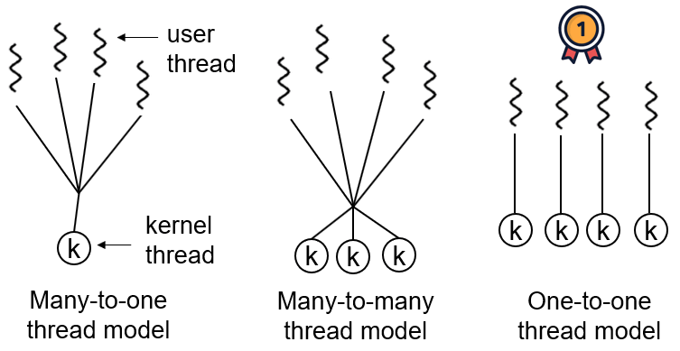
在 Windows 和 Linux 等主流操作系统中，HotSpot 的平台线程通常采用一对一模型，也就是一个平台线程对应一个操作系统线程。虚拟线程不采用这种一对一映射，而是由 JVM 调度到一组平台线程上执行。
⭐️ 请简要描述线程与进程的关系，区别及优缺点？
下图是 Java 内存区域，通过下图我们从 JVM 的角度来说一下线程和进程之间的关系。
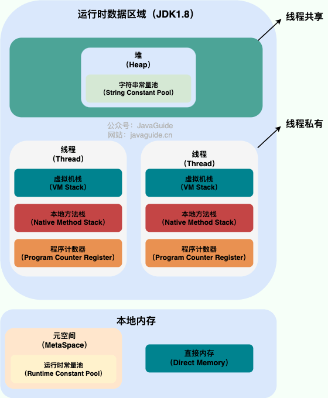
从上图可以看出：一个进程中可以有多个线程，多个线程共享进程的堆和方法区（JDK1.8 之后的元空间）资源，但是每个线程有自己的程序计数器、虚拟机栈 和 本地方法栈。
总结： 线程是进程划分成的更小的运行单位。线程和进程最大的不同在于基本上各进程是独立的，而各线程则不一定，因为同一进程中的线程极有可能会相互影响。线程执行开销小，但不利于资源的管理和保护；而进程正相反。
下面是该知识点的扩展内容！
下面来思考这样一个问题：为什么程序计数器、虚拟机栈和本地方法栈是线程私有的呢？为什么堆和方法区是线程共享的呢？
程序计数器为什么是私有的？
程序计数器主要有下面两个作用：
- 字节码解释器通过改变程序计数器来依次读取指令，从而实现代码的流程控制，如：顺序执行、选择、循环、异常处理。
- 在多线程的情况下，程序计数器用于记录当前线程执行的位置，从而当线程被切换回来的时候能够知道该线程上次运行到哪儿了。
需要注意的是，如果执行的是 native 方法，那么程序计数器记录的是 undefined 地址，只有执行的是 Java 代码时程序计数器记录的才是下一条指令的地址。
所以，程序计数器私有主要是为了线程切换后能恢复到正确的执行位置。
虚拟机栈和本地方法栈为什么是私有的？
- 虚拟机栈： 每个 Java 方法在执行之前会创建一个栈帧用于存储局部变量表、操作数栈、常量池引用等信息。从方法调用直至执行完成的过程，就对应着一个栈帧在 Java 虚拟机栈中入栈和出栈的过程。
- 本地方法栈： 和虚拟机栈所发挥的作用非常相似，区别是：虚拟机栈为虚拟机执行 Java 方法（也就是字节码）服务，而本地方法栈则为虚拟机使用到的 Native 方法服务。 在 HotSpot 虚拟机中和 Java 虚拟机栈合二为一。
所以，为了保证线程中的局部变量不被别的线程访问到，虚拟机栈和本地方法栈是线程私有的。
一句话简单了解堆和方法区
堆和方法区是所有线程共享的资源，其中堆是进程中最大的一块内存，主要用于存放新创建的对象（几乎所有对象都在这里分配内存），方法区主要用于存放已被加载的类信息、常量、静态变量、即时编译器编译后的代码等数据。
如何创建线程？
一般来说，创建线程有很多种方式，例如继承 Thread 类、实现 Runnable 接口、实现 Callable 接口、使用线程池、使用 CompletableFuture 类等等。
不过，这些方式其实并没有真正创建出线程。准确点来说，这些都属于是在 Java 代码中使用多线程的方法。
严格来说，Java 就只有一种方式可以创建线程，那就是通过 new Thread().start() 创建。不管是哪种方式，最终还是依赖于 new Thread().start()。
⭐️ 说说线程的生命周期和状态？
Java 线程在运行的生命周期中的指定时刻只可能处于下面 6 种不同状态的其中一个状态：
- NEW: 初始状态，线程被创建出来但没有被调用
start()。 - RUNNABLE: 运行状态，线程被调用了
start()等待运行的状态。 - BLOCKED：阻塞状态，需要等待锁释放。
- WAITING：等待状态，表示该线程需要等待其他线程做出一些特定动作（通知或中断）。
- TIMED_WAITING：超时等待状态，可以在指定的时间后自行返回而不是像 WAITING 那样一直等待。
- TERMINATED：终止状态，表示该线程已经运行完毕。
线程在生命周期中并不是固定处于某一个状态而是随着代码的执行在不同状态之间切换。
Java 线程状态变迁图(图源：挑错 |《Java 并发编程的艺术》中关于线程状态的三处错误)：
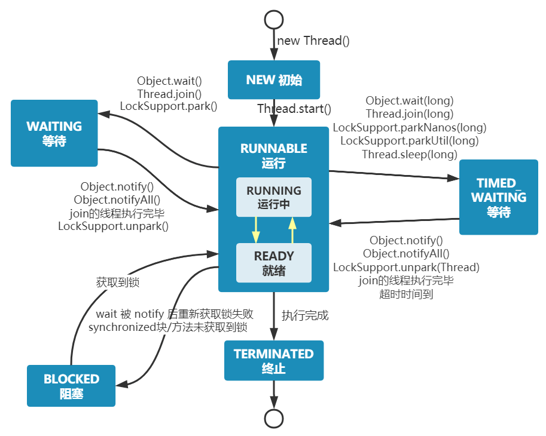
由上图可以看出：线程创建之后它将处于 NEW（新建） 状态，调用 start() 方法后开始运行，线程这时候处于 READY（可运行） 状态。可运行状态的线程获得了 CPU 时间片（timeslice）后就处于 RUNNING（运行） 状态。
在操作系统层面，线程有 READY 和 RUNNING 状态；而在 JVM 层面，只能看到 RUNNABLE 状态（图源：HowToDoInJava：Java Thread Life Cycle and Thread States），所以 Java 系统一般将这两个状态统称为 RUNNABLE（运行中） 状态。
为什么 JVM 没有区分这两种状态呢？ Java 的
Thread.State描述的是 JVM 层面的线程状态，不用于反映操作系统调度器的全部内部状态。具体调度策略、时间片长度和是否采用轮转方式都由操作系统及其配置决定，不能固定概括为 10～20 ms 的轮转调度。
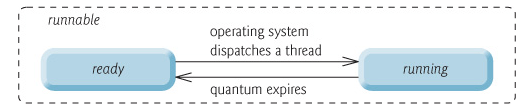
- 当线程执行
wait()方法之后，线程进入 WAITING（等待） 状态。进入等待状态的线程需要依靠其他线程的通知才能够返回到运行状态。 - TIMED_WAITING（超时等待） 状态相当于在等待状态的基础上增加了超时限制，比如通过
sleep（long millis）方法或wait（long millis）方法可以将线程置于 TIMED_WAITING 状态。当超时时间结束后，线程将会返回到 RUNNABLE 状态。 - 当线程进入
synchronized方法/块或者调用wait后（被notify）重新进入synchronized方法/块，但是锁被其它线程占有，这个时候线程就会进入 BLOCKED（阻塞） 状态。 - 线程在执行完了
run()方法之后将会进入到 TERMINATED（终止） 状态。
什么是线程上下文切换？
线程在执行过程中会有自己的运行条件和状态（也称上下文），比如上文所说到过的程序计数器，栈信息等。当出现如下情况的时候，线程会从占用 CPU 状态中退出。
- 主动让出 CPU，比如调用了
sleep(),wait()等。 - 时间片用完，因为操作系统要防止一个线程或者进程长时间占用 CPU 导致其他线程或者进程饿死。
- 调用了阻塞类型的系统中断，比如请求 IO，线程被阻塞。
- 被终止或结束运行
这其中前三种都会发生线程切换，线程切换意味着需要保存当前线程的上下文，留待线程下次占用 CPU 的时候恢复现场。并加载下一个将要占用 CPU 的线程上下文。这就是所谓的 上下文切换。
上下文切换是现代操作系统的基本功能，因其每次需要保存信息恢复信息，这将会占用 CPU，内存等系统资源进行处理，也就意味着效率会有一定损耗，如果频繁切换就会造成整体效率低下。
Thread#sleep() 方法和 Object#wait() 方法对比
共同点：两者都可以暂停线程的执行。
区别：
sleep()方法没有释放锁，而wait()方法释放了锁。wait()通常被用于线程间交互/通信，sleep()通常被用于暂停执行。wait()方法被调用后，线程不会自动苏醒，需要别的线程调用同一个对象上的notify()或者notifyAll()方法。sleep()方法执行完成后，线程会自动苏醒，或者也可以使用wait(long timeout)超时后线程会自动苏醒。sleep()是Thread类的静态本地方法，wait()则是Object类的本地方法。为什么这样设计呢？下一个问题就会聊到。
为什么 wait() 方法不定义在 Thread 中？
wait() 是让获得对象锁的线程实现等待，会自动释放当前线程占有的对象锁。每个对象（Object）都拥有对象锁，既然要释放当前线程占有的对象锁并让其进入 WAITING 状态，自然是要操作对应的对象（Object）而非当前的线程（Thread）。
类似的问题：为什么 sleep() 方法定义在 Thread 中？
因为 sleep() 是让当前线程暂停执行，不涉及到对象类，也不需要获得对象锁。
可以直接调用 Thread 类的 run 方法吗？
这是另一个非常经典的 Java 多线程面试问题，而且在面试中会经常被问到。很简单，但是很多人都会答不上来！
new 一个 Thread，线程进入了新建状态。调用 start() 方法，会启动一个线程并使线程进入了就绪状态，当分配到时间片后就可以开始运行了。 start() 会执行线程的相应准备工作，然后自动执行 run() 方法的内容，这是真正的多线程工作。 但是，直接执行 run() 方法，会把 run() 方法当成一个普通方法在调用该方法的线程去执行，所以这并不是多线程工作。
总结：调用 start() 方法方可启动线程并使线程进入就绪状态，直接执行 run() 方法的话不会以多线程的方式执行。
【多线程】
并发与并行的区别
- 并发：两个及两个以上的作业在同一 时间段 内执行。
- 并行：两个及两个以上的作业在同一 时刻 执行。
最关键的点是：是否是 同时 执行。
同步和异步的区别
- 同步：发出一个调用之后，在没有得到结果之前， 该调用就不可以返回，一直等待。
- 异步：调用在发出之后，不用等待返回结果，该调用直接返回。
⭐️ 为什么要使用多线程？
先从总体上来说：
- 从计算机底层来说： 线程可以比作是轻量级的进程，是程序执行的最小单位，线程间的切换和调度的成本远远小于进程。另外，多核 CPU 时代意味着多个线程可以同时运行，这减少了线程上下文切换的开销。
- 从当代互联网发展趋势来说： 现在的系统动不动就要求百万级甚至千万级的并发量，而多线程并发编程正是开发高并发系统的基础，利用好多线程机制可以大大提高系统整体的并发能力以及性能。
再深入到计算机底层来探讨：
- 单核时代：在单核时代多线程主要是为了提高单进程利用 CPU 和 IO 系统的效率。 假设只运行了一个 Java 进程的情况，当我们请求 IO 的时候，如果 Java 进程中只有一个线程，此线程被 IO 阻塞则整个进程被阻塞。CPU 和 IO 设备只有一个在运行，那么可以简单地说系统整体效率只有 50%。当使用多线程的时候，一个线程被 IO 阻塞，其他线程还可以继续使用 CPU。从而提高了 Java 进程利用系统资源的整体效率。
- 多核时代: 多核时代多线程主要是为了提高进程利用多核 CPU 的能力。举个例子：假如我们要计算一个复杂的任务，我们只用一个线程的话，不论系统有几个 CPU 核心，都只会有一个 CPU 核心被利用到。而创建多个线程，这些线程可以被映射到底层多个 CPU 核心上执行，在任务中的多个线程没有资源竞争的情况下，任务执行的效率会有显著性的提高，约等于（单核时执行时间/CPU 核心数）。
⭐️ 单核 CPU 支持 Java 多线程吗？
单核 CPU 是支持 Java 多线程的。操作系统通过时间片轮转的方式，将 CPU 的时间分配给不同的线程。尽管单核 CPU 一次只能执行一个任务，但通过快速在多个线程之间切换，可以让用户感觉多个任务是同时进行的。
这里顺带提一下 Java 使用的线程调度方式。
操作系统主要通过两种线程调度方式来管理多线程的执行：
- 抢占式调度（Preemptive Scheduling）：操作系统决定何时暂停当前正在运行的线程，并切换到另一个线程执行。这种切换通常是由系统时钟中断（时间片轮转）或其他高优先级事件（如 I/O 操作完成）触发的。这种方式存在上下文切换开销，但公平性和 CPU 资源利用率较好，不易阻塞。
- 协同式调度（Cooperative Scheduling）：线程执行完毕后，主动通知系统切换到另一个线程。这种方式可以减少上下文切换带来的性能开销，但公平性较差，容易阻塞。
Java 使用的线程调度是抢占式的。也就是说，JVM 本身不负责线程的调度，而是将线程的调度委托给操作系统。操作系统通常会基于线程优先级和时间片来调度线程的执行，高优先级的线程通常获得 CPU 时间片的机会更多。
⭐️ 单核 CPU 上运行多个线程效率一定会高吗？
单核 CPU 同时运行多个线程的效率是否会高，取决于线程的类型和任务的性质。一般来说，有两种类型的线程：
- CPU 密集型：CPU 密集型的线程主要进行计算和逻辑处理，需要占用大量的 CPU 资源。
- IO 密集型：IO 密集型的线程主要进行输入输出操作，如读写文件、网络通信等，需要等待 IO 设备的响应，而不占用太多的 CPU 资源。
在单核 CPU 上，同一时刻只能有一个线程在运行，其他线程需要等待 CPU 的时间片分配。如果线程是 CPU 密集型的，那么多个线程同时运行会导致频繁的线程切换，增加了系统的开销，降低了效率。如果线程是 IO 密集型的，那么多个线程同时运行可以利用 CPU 在等待 IO 时的空闲时间，提高了效率。
因此，对于单核 CPU 来说，如果任务是 CPU 密集型的，那么开很多线程会影响效率；如果任务是 IO 密集型的，那么开很多线程会提高效率。当然，这里的“很多”也要适度，不能超过系统能够承受的上限。
使用多线程可能带来什么问题？
并发编程的目的就是为了能提高程序的执行效率进而提高程序的运行速度，但是并发编程并不总是能提高程序运行速度的，而且并发编程可能会遇到很多问题，比如：内存泄漏、死锁、线程不安全等等。
如何理解线程安全和不安全？
线程安全和不安全是在多线程环境下对于同一份数据的访问是否能够保证其正确性和一致性的描述。
- 线程安全指的是在多线程环境下，对于同一份数据，不管有多少个线程同时访问，都能保证这份数据的正确性和一致性。
- 线程不安全则表示在多线程环境下，对于同一份数据，多个线程同时访问时可能会导致数据混乱、错误或者丢失。
【⭐️ 死锁】
什么是线程死锁？
线程死锁描述的是这样一种情况：多个线程同时被阻塞，它们中的一个或者全部都在等待某个资源被释放。由于线程被无限期地阻塞，因此程序不可能正常终止。
如下图所示，线程 A 持有资源 2，线程 B 持有资源 1，他们同时都想申请对方的资源，所以这两个线程就会互相等待而进入死锁状态。
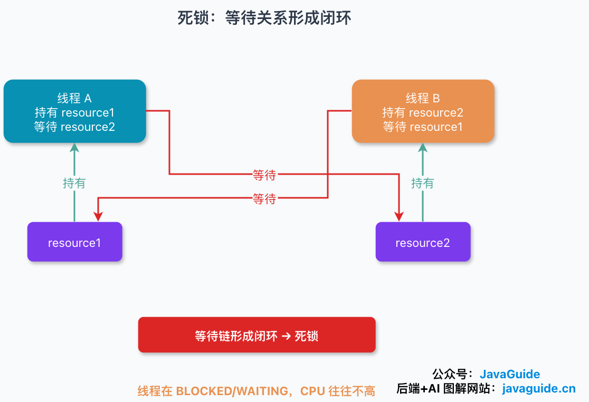
下面通过一个例子来说明线程死锁，代码模拟了上图的死锁的情况（代码来源于《并发编程之美》）：
public class DeadLockDemo {
private static Object resource1 = new Object();//资源 1
private static Object resource2 = new Object();//资源 2
public static void main(String[] args) {
new Thread(() -> {
synchronized (resource1) {
System.out.println(Thread.currentThread() + "get resource1");
try {
Thread.sleep(1000);
} catch (InterruptedException e) {
e.printStackTrace();
}
System.out.println(Thread.currentThread() + "waiting get resource2");
synchronized (resource2) {
System.out.println(Thread.currentThread() + "get resource2");
}
}
}, "线程 1").start();
new Thread(() -> {
synchronized (resource2) {
System.out.println(Thread.currentThread() + "get resource2");
try {
Thread.sleep(1000);
} catch (InterruptedException e) {
e.printStackTrace();
}
System.out.println(Thread.currentThread() + "waiting get resource1");
synchronized (resource1) {
System.out.println(Thread.currentThread() + "get resource1");
}
}
}, "线程 2").start();
}
}
Output
Thread[线程 1,5,main]get resource1
Thread[线程 2,5,main]get resource2
Thread[线程 1,5,main]waiting get resource2
Thread[线程 2,5,main]waiting get resource1
线程 A 通过 synchronized (resource1) 获得 resource1 的监视器锁，然后通过 Thread.sleep(1000); 让线程 A 休眠 1s，为的是让线程 B 得到执行然后获取到 resource2 的监视器锁。线程 A 和线程 B 休眠结束了都开始企图请求获取对方的资源，然后这两个线程就会陷入互相等待的状态，这也就产生了死锁。
上面的例子符合产生死锁的四个必要条件：
- 互斥条件：该资源任意一个时刻只由一个线程占用。
- 请求与保持条件：一个线程因请求资源而阻塞时，对已获得的资源保持不放。
- 不剥夺条件：线程已获得的资源在未使用完之前不能被其他线程强行剥夺，只有自己使用完毕后才释放资源。
- 循环等待条件：若干线程之间形成一种头尾相接的循环等待资源关系。
如何检测死锁？
- 使用
jstack或jcmd Thread.print -l查看线程栈和并发锁信息。如果检测到 Java 级别的死锁，输出中会列出相关线程及其持有、等待的锁。jmap主要用于查看堆信息或生成堆转储，不是线程死锁诊断工具。 - 采用 VisualVM、JConsole 等工具进行排查。
这里以 JConsole 工具为例进行演示。
首先，我们要找到 JDK 的 bin 目录，找到 jconsole 并双击打开。
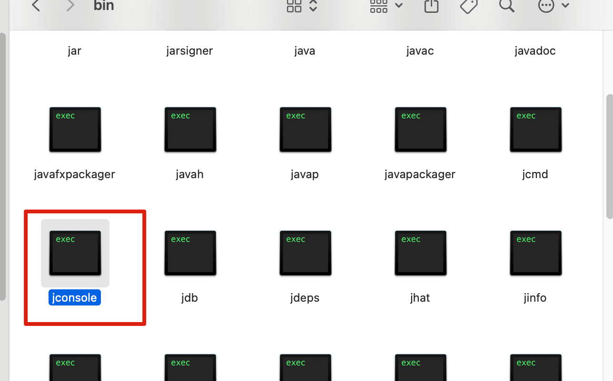
对于 MAC 用户来说，可以通过 /usr/libexec/java_home -V 查看 JDK 安装目录，找到后通过 open . + 文件夹地址 打开即可。例如，我本地的某个 JDK 的路径是：
open . /Users/guide/Library/Java/JavaVirtualMachines/corretto-1.8.0_252/Contents/Home
打开 jconsole 后，连接对应的程序，然后进入线程界面选择检测死锁即可！
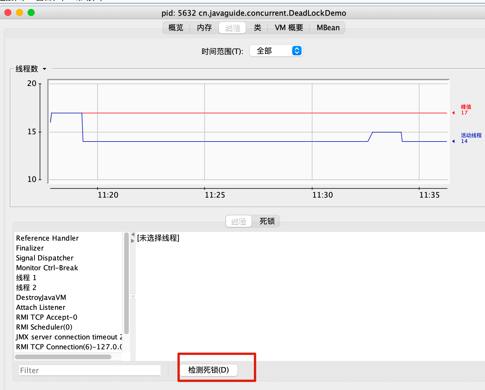
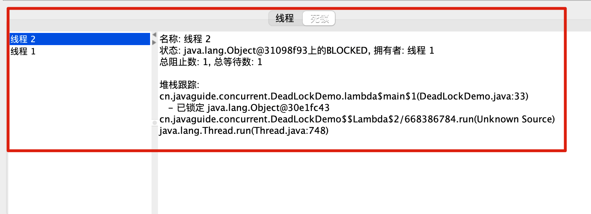
如何预防和避免线程死锁？
如何预防死锁？ 破坏死锁的产生的必要条件即可：
- 破坏请求与保持条件：一次性申请所有的资源。
- 破坏不剥夺条件：占用部分资源的线程进一步申请其他资源时，如果申请不到，可以主动释放它占有的资源。
- 破坏循环等待条件：靠按序申请资源来预防。按某一顺序申请资源，释放资源则反序释放。破坏循环等待条件。
如何避免死锁？
避免死锁就是在资源分配时，借助于算法（比如银行家算法）对资源分配进行计算评估，使其进入安全状态。
安全状态 指的是系统能够按照某种线程推进顺序（P1、P2、P3……Pn）来为每个线程分配所需资源，直到满足每个线程对资源的最大需求，使每个线程都可顺利完成。称 序列为安全序列。
我们对线程 2 的代码修改成下面这样就不会产生死锁了。
new Thread(() -> {
synchronized (resource1) {
System.out.println(Thread.currentThread() + "get resource1");
try {
Thread.sleep(1000);
} catch (InterruptedException e) {
e.printStackTrace();
}
System.out.println(Thread.currentThread() + "waiting get resource2");
synchronized (resource2) {
System.out.println(Thread.currentThread() + "get resource2");
}
}
}, "线程 2").start();
输出：
Thread[线程 1,5,main]get resource1
Thread[线程 1,5,main]waiting get resource2
Thread[线程 1,5,main]get resource2
Thread[线程 2,5,main]get resource1
Thread[线程 2,5,main]waiting get resource2
Thread[线程 2,5,main]get resource2
Process finished with exit code 0
我们分析一下上面的代码为什么避免了死锁的发生？
线程 1 首先获得到 resource1 的监视器锁，这时候线程 2 就获取不到了。然后线程 1 再去获取 resource2 的监视器锁，可以获取到。然后线程 1 释放了对 resource1、resource2 的监视器锁的占用，线程 2 获取到就可以执行了。这样就破坏了循环等待条件，因此避免了死锁。
【⭐️ JMM（Java 内存模型）】
⭐️ JMM（Java 内存模型）
JMM（Java 内存模型）相关的问题比较多，也比较重要，于是我单独抽了一篇文章来总结 JMM 相关的知识点和问题：JMM（Java 内存模型）详解。
【⭐️ volatile 关键字】
如何保证变量的可见性？
在 Java 中，volatile 关键字可以保证变量的可见性。对某个 volatile 变量的写入 happens-before 于后续对同一变量的读取，因此读线程能够看到该写入以及写入前按 happens-before 传递过来的结果。这是 JMM 规定的语义，不等同于要求每次访问都绕过 CPU 缓存、直接读写物理主存。
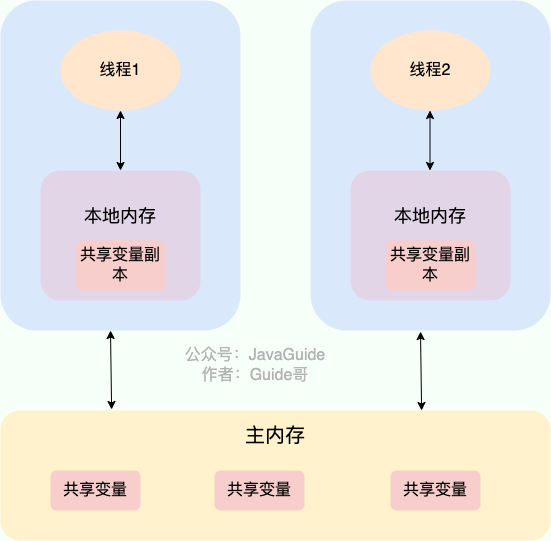
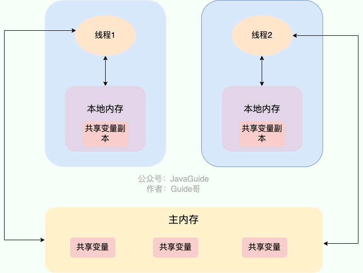
volatile 关键字并非 Java 语言特有，但不同语言中的语义并不相同。Java 的 volatile 由 JMM 定义可见性和有序性保证，不能解释为“禁用 CPU 缓存”。
volatile 关键字能保证数据的可见性，但不能保证数据的原子性。synchronized 关键字两者都能保证。
如何禁止指令重排序？
在 Java 中，volatile 关键字除了可以保证变量的可见性，还有一个重要的作用就是防止 JVM 的指令重排序。 如果我们将变量声明为 volatile，在对这个变量进行读写操作的时候，会通过插入特定的 内存屏障 的方式来禁止指令重排序。
在 Java 中，Unsafe 类提供了三个开箱即用的内存屏障相关的方法，屏蔽了操作系统底层的差异：
public native void loadFence();
public native void storeFence();
public native void fullFence();
理论上来说，你通过这个三个方法也可以实现和 volatile 禁止重排序一样的效果，只是会麻烦一些。
4 种内存屏障类型
在讲解 JVM 实现时，常用下面 4 类内存屏障来描述需要约束的重排序关系。它们是便于理解的实现层模型，并不是 JLS 对 JVM 必须逐条插入哪些具体屏障指令的规定：
| 屏障类型 | 指令示例 | 说明 |
|---|---|---|
| LoadLoad | Load1; LoadLoad; Load2 |
保证 Load1 的读取操作在 Load2 及其后续读取操作之前完成 |
| StoreStore | Store1; StoreStore; Store2 |
约束两个写操作的顺序，使 Store1 的效果不会晚于 Store2 对其他处理器可见 |
| LoadStore | Load1; LoadStore; Store2 |
保证 Load1 的读取操作在 Store2 及其后续写入操作刷新到内存之前完成 |
| StoreLoad | Store1; StoreLoad; Load2 |
保证 Store1 的写入操作对其他处理器可见，先于 Load2 及其后续读取操作。StoreLoad 屏障的开销是四种屏障中最大的，它同时具有其他三种屏障的效果，因此也称为 全能屏障（Full Barrier） |
volatile 读写操作的内存屏障插入策略
下面是一种便于理解 volatile 语义的保守屏障插入策略。实际 JVM 会根据目标处理器的内存模型选择、合并或省略具体屏障，只要最终行为满足 JMM 即可：
volatile 写操作的内存屏障插入策略：
在每个 volatile 写操作的 前面 插入一个 StoreStore 屏障，在 后面 插入一个 StoreLoad 屏障。
StoreStore 屏障
volatile 写操作
StoreLoad 屏障
- 前面的
StoreStore屏障：保证volatile写之前的普通写不会被重排序到该volatile写之后。 - 后面的
StoreLoad屏障：保证 volatile 写之后，其写入的值对后续的 volatile 读/写操作可见。这是开销最大的屏障，但也是最关键的——它避免了 volatile 写与后面可能有的 volatile 读/写操作发生重排序。
volatile 读操作的内存屏障插入策略：
在每个 volatile 读操作的 后面 插入一个 LoadLoad 屏障和一个 LoadStore 屏障。
volatile 读操作
LoadLoad 屏障
LoadStore 屏障
LoadLoad屏障：保证 volatile 读之后的普通读操作不会被重排序到 volatile 读之前。LoadStore屏障：保证 volatile 读之后的普通写操作不会被重排序到 volatile 读之前。
这样一来，volatile 写-读的组合就建立了一个类似于 锁的释放-获取 的语义：volatile 写操作之前的所有操作结果，对于后续对该 volatile 变量的读操作之后的所有操作都是可见的。
下面我以一个常见的面试题为例讲解一下 volatile 关键字禁止指令重排序的效果。
面试中面试官经常会说：“单例模式了解吗？来给我手写一下！给我解释一下双重检验锁方式实现单例模式的原理呗！”
双重校验锁实现对象单例（线程安全）：
public class Singleton {
private volatile static Singleton uniqueInstance;
private Singleton() {
}
public static Singleton getUniqueInstance() {
//先判断对象是否已经实例过，没有实例化过才进入加锁代码
if (uniqueInstance == null) {
//类对象加锁
synchronized (Singleton.class) {
if (uniqueInstance == null) {
uniqueInstance = new Singleton();
}
}
}
return uniqueInstance;
}
}
uniqueInstance 采用 volatile 关键字修饰也是很有必要的， uniqueInstance = new Singleton(); 这段代码其实是分为三步执行：
- 为
uniqueInstance分配内存空间 - 初始化
uniqueInstance - 将
uniqueInstance指向分配的内存地址
但是由于 JVM 具有指令重排的特性，执行顺序有可能变成 1->3->2。指令重排在单线程环境下不会出现问题，但是在多线程环境下会导致一个线程获得还没有初始化的实例。例如，线程 T1 执行了 1 和 3，此时 T2 调用 getUniqueInstance() 后发现 uniqueInstance 不为空，因此返回 uniqueInstance，但此时 uniqueInstance 还未被初始化。
从内存屏障角度理解 DCL 必须使用 volatile
上面从指令重排序的角度解释了 DCL 单例中 uniqueInstance 为什么需要 volatile 修饰。下面从内存屏障的角度进一步分析 volatile 是如何解决这个问题的。
uniqueInstance = new Singleton(); 这行代码的三个步骤（分配内存、初始化对象、赋值引用）中，如果不加 volatile，步骤 2 和步骤 3 可能会被重排序为 1→3→2。加了 volatile 之后，由于 uniqueInstance 是 volatile 变量，对它的写操作（步骤 3：将引用赋值给 uniqueInstance）会按照前面介绍的 volatile 写的内存屏障插入策略来处理：
- 在 volatile 写 之前 插入
StoreStore屏障：保证步骤 1（分配内存）和步骤 2（初始化对象）的写操作在步骤 3（赋值引用）之前完成，禁止了步骤 2 和步骤 3 的重排序。 - 在 volatile 写 之后 插入
StoreLoad屏障：约束该写与后续读写的重排序，并配合volatile读建立 JMM 要求的可见性。
这样，当线程 T2 读取 uniqueInstance 时（volatile 读），如果发现 uniqueInstance != null，那么可以保证该对象一定已经被完全初始化了。
volatile 与 happens-before 的关系
JMM 中的 happens-before 原则是判断数据是否存在竞争、线程是否安全的重要依据。volatile 变量的读写操作与 happens-before 原则有着密切的关系。
关于 happens-before 原则的详细介绍，可以参考 JMM（Java 内存模型）详解 这篇文章。
happens-before 原则中与 volatile 直接相关的是 volatile 变量规则：
对一个 volatile 变量的写操作 happens-before 于后续对该 volatile 变量的读操作。
也就是说，如果线程 A 写入了一个 volatile 变量，线程 B 随后读取了同一个 volatile 变量，那么线程 A 在写入 volatile 变量之前所做的所有修改（包括对非 volatile 变量的修改），对线程 B 都是可见的。
这个规则配合 happens-before 的 传递性规则（如果 A happens-before B，B happens-before C，那么 A happens-before C），可以实现一种轻量级的线程间通信。下面通过一个示例来说明：
public class VolatileHappensBeforeDemo {
private int a = 0;
private int b = 0;
private volatile boolean flag = false;
// 线程 A 执行
public void writer() {
a = 1; // 操作1：普通写
b = 2; // 操作2：普通写
flag = true; // 操作3：volatile 写
}
// 线程 B 执行
public void reader() {
if (flag) { // 操作4：volatile 读
int x = a; // 操作5：普通读，x 一定等于 1
int y = b; // 操作6：普通读，y 一定等于 2
System.out.println("x=" + x + ", y=" + y);
}
}
}
上面代码中，happens-before 关系链如下：
- 操作 1、操作 2 happens-before 操作 3（程序顺序规则：同一线程中，前面的操作 happens-before 后面的操作）
- 操作 3 happens-before 操作 4（volatile 变量规则：volatile 写 happens-before volatile 读）
- 操作 4 happens-before 操作 5、操作 6（程序顺序规则）
根据 传递性：操作 1、操作 2 happens-before 操作 5、操作 6。
因此，当线程 B 在操作 4 读取到 flag == true 时，线程 A 在操作 3 之前对 a 和 b 的修改对线程 B 一定是可见的。这里的关键在于：volatile 变量的写-读操作，不仅保证了 volatile 变量本身的可见性，还通过 happens-before 的传递性“顺带”保证了其前后普通变量的可见性。
这也解释了为什么在实际开发中，volatile 经常被用作 状态标志位（如上面例子中的 flag），它可以在不使用锁的情况下，安全地在线程间传递状态信息，同时保证相关数据的可见性。
volatile 可以保证原子性么？
volatile 关键字能保证变量的可见性，但不能保证对变量的操作是原子性的。
我们通过下面的代码即可证明：
/**
* 微信搜 JavaGuide 回复"面试突击"即可免费领取个人原创的 Java 面试手册
*
* @author Guide哥
* @date 2022/08/03 13:40
**/
public class VolatileAtomicityDemo {
public volatile static int inc = 0;
public void increase() {
inc++;
}
public static void main(String[] args) throws InterruptedException {
ExecutorService threadPool = Executors.newFixedThreadPool(5);
VolatileAtomicityDemo volatileAtomicityDemo = new VolatileAtomicityDemo();
for (int i = 0; i < 5; i++) {
threadPool.execute(() -> {
for (int j = 0; j < 500; j++) {
volatileAtomicityDemo.increase();
}
});
}
// 等待1.5秒，保证上面程序执行完成
Thread.sleep(1500);
System.out.println(inc);
threadPool.shutdown();
}
}
正常情况下，运行上面的代码理应输出 2500。但你真正运行了上面的代码之后，你会发现每次输出结果都小于 2500。
为什么会出现这种情况呢？不是说好了，volatile 可以保证变量的可见性嘛！
也就是说，如果 volatile 能保证 inc++ 操作的原子性的话。每个线程中对 inc 变量自增完之后，其他线程可以立即看到修改后的值。5 个线程分别进行了 500 次操作，那么最终 inc 的值应该是 5*500=2500。
很多人会误认为自增操作 inc++ 是原子性的，实际上，inc++ 其实是一个复合操作，包括三步：
- 读取 inc 的值。
- 对 inc 加 1。
- 将 inc 的值写回内存。
volatile 是无法保证这三个操作是具有原子性的，有可能导致下面这种情况出现：
- 线程 1 对
inc进行读取操作之后，还未对其进行修改。线程 2 又读取了inc的值并对其进行修改（+1），再将inc的值写回内存。 - 线程 2 操作完毕后，线程 1 对
inc的值进行修改（+1），再将inc的值写回内存。
这也就导致两个线程分别对 inc 进行了一次自增操作后，inc 实际上只增加了 1。
其实，如果想要保证上面的代码运行正确也非常简单，利用 synchronized、Lock 或者 AtomicInteger 都可以。
使用 synchronized 改进：
public synchronized void increase() {
inc++;
}
使用 AtomicInteger 改进：
public AtomicInteger inc = new AtomicInteger();
public void increase() {
inc.getAndIncrement();
}
使用 ReentrantLock 改进：
Lock lock = new ReentrantLock();
public void increase() {
lock.lock();
try {
inc++;
} finally {
lock.unlock();
}
}
【⭐️ 乐观锁和悲观锁】
什么是悲观锁？
悲观锁总是假设最坏的情况，认为共享资源每次被访问的时候就会出现问题（比如共享数据被修改），所以每次在获取资源操作的时候都会上锁，这样其他线程想拿到这个资源就会阻塞直到锁被上一个持有者释放。也就是说，共享资源每次只给一个线程使用，其它线程阻塞，用完后再把资源转让给其它线程。
像 Java 中 synchronized 和 ReentrantLock 等独占锁就是悲观锁思想的实现。
public void performSynchronisedTask() {
synchronized (this) {
// 需要同步的操作
}
}
private Lock lock = new ReentrantLock();
lock.lock();
try {
// 需要同步的操作
} finally {
lock.unlock();
}
高并发的场景下，激烈的锁竞争会造成线程阻塞，大量阻塞线程会导致系统的上下文切换，增加系统的性能开销。并且，悲观锁还可能会存在死锁问题，影响代码的正常运行。
什么是乐观锁？
乐观锁总是假设最好的情况，认为共享资源每次被访问的时候不会出现问题，线程可以不停地执行，无需加锁也无需等待，只是在提交修改的时候去验证对应的资源（也就是数据）是否被其它线程修改了（具体方法可以使用版本号机制或 CAS 算法）。
在 Java 中 java.util.concurrent.atomic 包下面的原子变量类（比如 AtomicInteger、LongAdder）就是使用了乐观锁的一种实现方式 CAS 实现的。
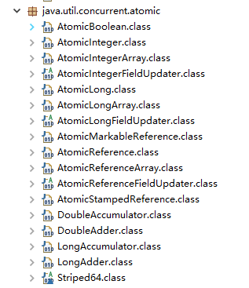
// LongAdder 在高并发场景下会比 AtomicInteger 和 AtomicLong 的性能更好
// 代价就是会消耗更多的内存空间（空间换时间）
LongAdder sum = new LongAdder();
sum.increment();
高并发的场景下，乐观锁相比悲观锁来说，不存在锁竞争造成线程阻塞，也不会有死锁的问题，在性能上往往会更胜一筹。但是，如果冲突频繁发生（写占比非常多的情况），会频繁失败和重试，这样同样会非常影响性能，导致 CPU 飙升。
不过，大量失败重试的问题也是可以解决的，像我们前面提到的 LongAdder 以空间换时间的方式就解决了这个问题。
理论上来说：
- 悲观锁通常多用于写比较多的情况（多写场景，竞争激烈），这样可以避免频繁失败和重试影响性能，悲观锁的开销是固定的。不过，如果乐观锁解决了频繁失败和重试这个问题的话（比如
LongAdder），也是可以考虑使用乐观锁的，要视实际情况而定。 - 乐观锁通常多用于写比较少的情况（多读场景，竞争较少），这样可以避免频繁加锁影响性能。不过，乐观锁主要针对的对象是单个共享变量（参考
java.util.concurrent.atomic包下面的原子变量类）。
如何实现乐观锁？
乐观锁一般会使用版本号机制或 CAS 算法实现，CAS 算法相对来说更多一些，这里需要格外注意。
版本号机制
一般是在数据表中加上一个数据版本号 version 字段，表示数据被修改的次数。当数据被修改时，version 值会加一。当线程 A 要更新数据值时，在读取数据的同时也会读取 version 值，在提交更新时，若刚才读取到的 version 值为当前数据库中的 version 值相等时才更新，否则重试更新操作，直到更新成功。
举一个简单的例子：假设数据库中帐户信息表中有一个 version 字段，当前值为 1；而当前帐户余额字段（balance）为 ＄100。
- 操作员 A 此时将其读出（
version=1），并从其帐户余额中扣除 100-＄50）。 - 在操作员 A 操作的过程中，操作员 B 也读入此用户信息（
version=1），并从其帐户余额中扣除 100-＄20）。 - 操作员 A 完成了修改工作，将数据版本号（
version=1），连同帐户扣除后余额（balance=＄50），提交至数据库更新，此时由于提交数据版本等于数据库记录当前版本，数据被更新，数据库记录version更新为 2。 - 操作员 B 完成了操作，也将版本号（
version=1）试图向数据库提交数据（balance=＄80），但此时比对数据库记录版本时发现，操作员 B 提交的数据版本号为 1，数据库记录当前版本也为 2，不满足 “ 提交版本必须等于当前版本才能执行更新 ” 的乐观锁策略，因此，操作员 B 的提交被驳回。
这样就避免了操作员 B 用基于 version=1 的旧数据修改的结果覆盖操作员 A 的操作结果的可能。
CAS 算法
CAS 的全称是 Compare And Swap（比较与交换），用于实现乐观锁，被广泛应用于各大框架中。CAS 的思想很简单，就是用一个预期值和要更新的变量值进行比较，两值相等才会进行更新。
CAS 是一个原子操作，底层依赖于一条 CPU 的原子指令。
原子操作 即最小不可拆分的操作，也就是说操作一旦开始，就不能被打断，直到操作完成。
CAS 涉及到三个操作数：
- V：要更新的变量值(Var)
- E：预期值(Expected)
- N：拟写入的新值(New)
当且仅当 V 的值等于 E 时，CAS 通过原子方式用新值 N 来更新 V 的值。如果不等，说明已经有其它线程更新了 V，则当前线程放弃更新。
举一个简单的例子：线程 A 要修改变量 i 的值为 6，i 原值为 1（V = 1，E=1，N=6，假设不存在 ABA 问题）。
- i 与 1 进行比较，如果相等， 则说明没被其他线程修改，可以被设置为 6。
- i 与 1 进行比较，如果不相等，则说明被其他线程修改，当前线程放弃更新，CAS 操作失败。
当多个线程同时使用 CAS 操作一个变量时，只有一个会胜出，并成功更新，其余均会失败，但失败的线程并不会被挂起，仅是被告知失败，并且允许再次尝试，当然也允许失败的线程放弃操作。
Java 代码可以通过原子类、VarHandle 等 API 表达 CAS 语义。HotSpot 通常会把相关调用识别为 JVM 内部函数，再映射为目标处理器支持的原子指令或等价实现；这并不是 Java 规范固定要求的“JNI 调用 C++ 内联汇编”。
sun.misc 包下的 Unsafe 类提供了 compareAndSwapObject、compareAndSwapInt、compareAndSwapLong 方法来实现的对 Object、int、long 类型的 CAS 操作
/**
* CAS
* @param o 包含要修改field的对象
* @param offset 对象中某field的偏移量
* @param expected 期望值
* @param update 更新值
* @return true | false
*/
public final native boolean compareAndSwapObject(Object o, long offset, Object expected, Object update);
public final native boolean compareAndSwapInt(Object o, long offset, int expected,int update);
public final native boolean compareAndSwapLong(Object o, long offset, long expected, long update);
关于 Unsafe 类的详细介绍可以看这篇文章：Java 魔法类 Unsafe 详解 - JavaGuide - 2022。
Java 中 CAS 是如何实现的？
在 Java 中，实现 CAS（Compare-And-Swap, 比较并交换）操作的一个关键类是 Unsafe。
Unsafe 类位于 sun.misc 包下，是一个提供低级别、不安全操作的类。由于其强大的功能和潜在的危险性，它通常用于 JVM 内部或一些需要极高性能和底层访问的库中，而不推荐普通开发者在应用程序中使用。关于 Unsafe 类的详细介绍，可以阅读这篇文章：📌Java 魔法类 Unsafe 详解。
sun.misc 包下的 Unsafe 类提供了 compareAndSwapObject、compareAndSwapInt、compareAndSwapLong 方法来实现的对 Object、int、long 类型的 CAS 操作：
/**
* 以原子方式更新对象字段的值。
*
* @param o 要操作的对象
* @param offset 对象字段的内存偏移量
* @param expected 期望的旧值
* @param x 要设置的新值
* @return 如果值被成功更新，则返回 true；否则返回 false
*/
boolean compareAndSwapObject(Object o, long offset, Object expected, Object x);
/**
* 以原子方式更新 int 类型的对象字段的值。
*/
boolean compareAndSwapInt(Object o, long offset, int expected, int x);
/**
* 以原子方式更新 long 类型的对象字段的值。
*/
boolean compareAndSwapLong(Object o, long offset, long expected, long x);
JDK 8 中 Unsafe 的这些 CAS 方法是 native 方法。Java 代码通过它们表达原子比较并交换语义，HotSpot 通常会将相关调用作为 JVM 内部函数处理，并映射为目标处理器支持的原子指令或等价实现。具体实现依赖 JVM 和 CPU 架构，但不能简单概括为“通过 JNI 调用 C++ 内联汇编”。
java.util.concurrent.atomic 包提供了一些用于原子操作的类。这些类利用底层的原子指令，确保在多线程环境下的操作是线程安全的。

关于这些 Atomic 原子类的介绍和使用，可以阅读这篇文章：Atomic 原子类总结。
AtomicInteger 是 Java 的原子类之一，主要用于对 int 类型的变量进行原子操作，它利用 Unsafe 类提供的低级别原子操作方法实现无锁的线程安全性。
下面，我们通过解读 AtomicInteger 的核心源码（JDK1.8），来说明 Java 如何使用 Unsafe 类的方法来实现原子操作。
AtomicInteger 核心源码如下：
// 获取 Unsafe 实例
private static final Unsafe unsafe = Unsafe.getUnsafe();
private static final long valueOffset;
static {
try {
// 获取“value”字段在AtomicInteger类中的内存偏移量
valueOffset = unsafe.objectFieldOffset
(AtomicInteger.class.getDeclaredField("value"));
} catch (Exception ex) { throw new Error(ex); }
}
// 确保“value”字段的可见性
private volatile int value;
// 如果当前值等于预期值，则原子地将值设置为newValue
// 使用 Unsafe#compareAndSwapInt 方法进行CAS操作
public final boolean compareAndSet(int expect, int update) {
return unsafe.compareAndSwapInt(this, valueOffset, expect, update);
}
// 原子地将当前值加 delta 并返回旧值
public final int getAndAdd(int delta) {
return unsafe.getAndAddInt(this, valueOffset, delta);
}
// 原子地将当前值加 1 并返回加之前的值（旧值）
// 使用 Unsafe#getAndAddInt 方法进行CAS操作。
public final int getAndIncrement() {
return unsafe.getAndAddInt(this, valueOffset, 1);
}
// 原子地将当前值减 1 并返回减之前的值（旧值）
public final int getAndDecrement() {
return unsafe.getAndAddInt(this, valueOffset, -1);
}
Unsafe#getAndAddInt 源码：
// 原子地获取并增加整数值
public final int getAndAddInt(Object o, long offset, int delta) {
int v;
do {
// 以 volatile 方式获取对象 o 在内存偏移量 offset 处的整数值
v = getIntVolatile(o, offset);
} while (!compareAndSwapInt(o, offset, v, v + delta));
// 返回旧值
return v;
}
可以看到，getAndAddInt 使用了 do-while 循环：在 compareAndSwapInt 操作失败时，会不断重试直到成功。也就是说，getAndAddInt 方法会通过 compareAndSwapInt 方法来尝试更新 value 的值，如果更新失败（当前值在此期间被其他线程修改），它会重新获取当前值并再次尝试更新，直到操作成功。
由于 CAS 操作可能会因为并发冲突而失败，因此通常会与 while 循环搭配使用，在失败后不断重试，直到操作成功。这就是 自旋锁机制。
CAS 算法存在哪些问题？
ABA 问题是 CAS 算法最常见的问题。
ABA 问题
如果一个变量 V 初次读取的时候是 A 值，并且在准备赋值的时候检查到它仍然是 A 值，那我们就能说明它的值没有被其他线程修改过了吗？很明显是不能的，因为在这段时间它的值可能被改为其他值，然后又改回 A，那 CAS 操作就会误认为它从来没有被修改过。这个问题被称为 CAS 操作的 "ABA"问题。
ABA 问题的解决思路是在变量前面追加上版本号或者时间戳。JDK 1.5 以后的 AtomicStampedReference 类就是用来解决 ABA 问题的，其中的 compareAndSet() 方法就是首先检查当前引用是否等于预期引用，并且当前标志是否等于预期标志，如果全部相等，则以原子方式将该引用和该标志的值设置为给定的更新值。
public boolean compareAndSet(V expectedReference,
V newReference,
int expectedStamp,
int newStamp) {
Pair current = pair;
return
expectedReference == current.reference &&
expectedStamp == current.stamp &&
((newReference == current.reference &&
newStamp == current.stamp) ||
casPair(current, Pair.of(newReference, newStamp)));
}
循环时间长开销大
CAS 经常会用到自旋操作来进行重试，也就是不成功就一直循环执行直到成功。如果长时间不成功，会给 CPU 带来非常大的执行开销。
如果 JVM 能够支持处理器提供的 pause 指令，那么自旋操作的效率将有所提升。pause 指令有两个重要作用：
- 延迟流水线执行指令：
pause指令可以延迟指令的执行，从而减少 CPU 的资源消耗。具体的延迟时间取决于处理器的实现版本，在某些处理器上，延迟时间可能为零。 - 避免内存顺序冲突：在退出循环时，
pause指令可以避免由于内存顺序冲突而导致的 CPU 流水线被清空，从而提高 CPU 的执行效率。
只能保证一个共享变量的原子操作
CAS 操作仅能对单个共享变量有效。当需要操作多个共享变量时，CAS 就显得无能为力。不过，从 JDK 1.5 开始，Java 提供了 AtomicReference 类，这使得我们能够保证引用对象之间的原子性。通过将多个变量封装在一个对象中，我们可以使用 AtomicReference 来执行 CAS 操作。
除了 AtomicReference 这种方式之外，还可以利用加锁来保证。
总结
| 对比维度 | 乐观锁 (Optimistic Locking) | 悲观锁 (Pessimistic Locking) |
|---|---|---|
| 核心假设 | 假设冲突很少发生，提交时才验证。 | 假设冲突必然发生，读取时就加锁。 |
| 常见实现 | CAS (Compare And Swap) 或版本号机制。 | Java 监视器、Lock 或数据库锁等；具体实现可能包含自旋、排队和挂起。 |
| 竞争时行为 | 更新失败后由业务逻辑决定重试、放弃或回退。 | 获取失败的线程可能自旋、排队或被挂起，取决于具体锁实现。 |
| 并发开销 | CPU 消耗（高并发写时频繁自旋重试）。 | 上下文切换开销（线程挂起与唤醒）。 |
| 死锁风险 | 无死锁（因为不涉及持有锁的等待）。 | 有死锁风险（多个锁相互等待）。 |
| 数据库实现 | UPDATE ... SET version = version + 1 |
SELECT ... FOR UPDATE |
| Java 代表类 | AtomicInteger、LongAdder、StampedLock |
synchronized、ReentrantLock |
| 适用场景 | 多读少写、并发冲突概率低的业务。 | 多写少读、数据一致性要求极高的核心业务。 |
【synchronized 关键字】
synchronized 是什么？有什么用？
synchronized 是 Java 中的一个关键字，翻译成中文是同步的意思，主要解决的是多个线程之间访问资源的同步性，可以保证被它修饰的方法或者代码块在任意时刻只能有一个线程执行。
在 Java 早期版本中，synchronized 属于 重量级锁，效率低下。这是因为监视器锁（monitor）是依赖于底层的操作系统的 Mutex Lock 来实现的，Java 的线程是映射到操作系统的原生线程之上的。如果要挂起或者唤醒一个线程，都需要操作系统帮忙完成，而操作系统实现线程之间的切换时需要从用户态转换到内核态，这个状态之间的转换需要相对比较长的时间，时间成本相对较高。
不过，在 Java 6 之后， synchronized 引入了大量的优化如自旋锁、适应性自旋锁、锁消除、锁粗化、偏向锁、轻量级锁等技术来减少锁操作的开销，这些优化让 synchronized 锁的效率提升了很多。因此， synchronized 还是可以在实际项目中使用的，像 JDK 源码、很多开源框架都大量使用了 synchronized。
关于偏向锁多补充一点：由于偏向锁增加了 JVM 的复杂性，同时也并没有为所有应用都带来性能提升。因此，在 JDK15 中，偏向锁被默认关闭（仍然可以使用 -XX:+UseBiasedLocking 启用偏向锁），在 JDK18 中，偏向锁已经被彻底废弃（无法通过命令行打开）。
如何使用 synchronized？
synchronized 关键字的使用方式主要有下面 3 种：
- 修饰实例方法
- 修饰静态方法
- 修饰代码块
1、修饰实例方法（锁当前对象实例）
给当前对象实例加锁，进入同步代码前要获得 当前对象实例的锁。
synchronized void method() {
//业务代码
}
2、修饰静态方法（锁当前类）
给当前类加锁，会作用于类的所有对象实例，进入同步代码前要获得 当前 class 的锁。
这是因为静态成员不属于任何一个实例对象，归整个类所有，不依赖于类的特定实例，被类的所有实例共享。
synchronized static void method() {
//业务代码
}
静态 synchronized 方法和非静态 synchronized 方法之间的调用互斥么？不互斥！如果一个线程 A 调用一个实例对象的非静态 synchronized 方法，而线程 B 需要调用这个实例对象所属类的静态 synchronized 方法，是允许的，不会发生互斥现象，因为访问静态 synchronized 方法占用的锁是当前类的锁，而访问非静态 synchronized 方法占用的锁是当前实例对象锁。
3、修饰代码块（锁指定对象/类）
对括号里指定的对象/类加锁：
synchronized(object)表示进入同步代码块前要获得 给定对象的锁。synchronized(类.class)表示进入同步代码块前要获得 给定 Class 的锁
synchronized(this) {
//业务代码
}
总结：
synchronized关键字加到static静态方法和synchronized(class)代码块上都是是给 Class 类上锁；synchronized关键字加到实例方法上是给对象实例上锁；- 尽量不要使用
synchronized(String a)因为 JVM 中，字符串常量池具有缓存功能。
构造方法可以用 synchronized 修饰么？
构造方法不能使用 synchronized 关键字修饰。不过，可以在构造方法内部使用 synchronized 代码块。
另外，构造方法本身是线程安全的，但如果在构造方法中涉及到共享资源的操作，就需要采取适当的同步措施来保证整个构造过程的线程安全。
⭐️ synchronized 底层原理了解吗？
synchronized 关键字底层原理属于 JVM 层面的东西。
synchronized 同步语句块的情况
public class SynchronizedDemo {
public void method() {
synchronized (this) {
System.out.println("synchronized 代码块");
}
}
}
通过 JDK 自带的 javap 命令查看 SynchronizedDemo 类的相关字节码信息：首先切换到类的对应目录执行 javac SynchronizedDemo.java 命令生成编译后的 .class 文件，然后执行 javap -c -s -v -l SynchronizedDemo.class。
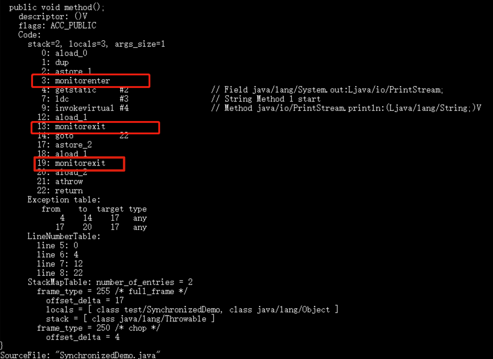
从上面我们可以看出：synchronized 同步语句块的实现使用的是 monitorenter 和 monitorexit 指令，其中 monitorenter 指令指向同步代码块的开始位置，monitorexit 指令则指明同步代码块的结束位置。
上面的字节码中包含一个 monitorenter 指令以及两个 monitorexit 指令，这是为了保证锁在同步代码块代码正常执行以及出现异常的这两种情况下都能被正确释放。
当执行 monitorenter 指令时，线程试图获取锁也就是获取 对象监视器 monitor 的持有权。
在 Java 虚拟机(HotSpot)中，Monitor 是基于 C++实现的，由ObjectMonitor实现的。每个对象中都内置了一个
ObjectMonitor对象。另外，
wait/notify等方法也依赖于monitor对象，这就是为什么只有在同步的块或者方法中才能调用wait/notify等方法，否则会抛出java.lang.IllegalMonitorStateException的异常的原因。
在执行 monitorenter 时，会尝试获取对象的锁，如果锁的计数器为 0 则表示锁可以被获取，获取后将锁计数器设为 1 也就是加 1。
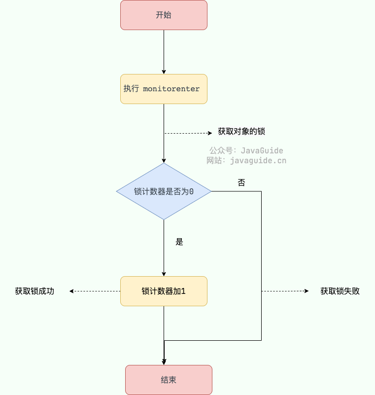
对象锁的拥有者线程才可以执行 monitorexit 指令来释放锁。在执行 monitorexit 指令后，将锁计数器设为 0，表明锁被释放，其他线程可以尝试获取锁。
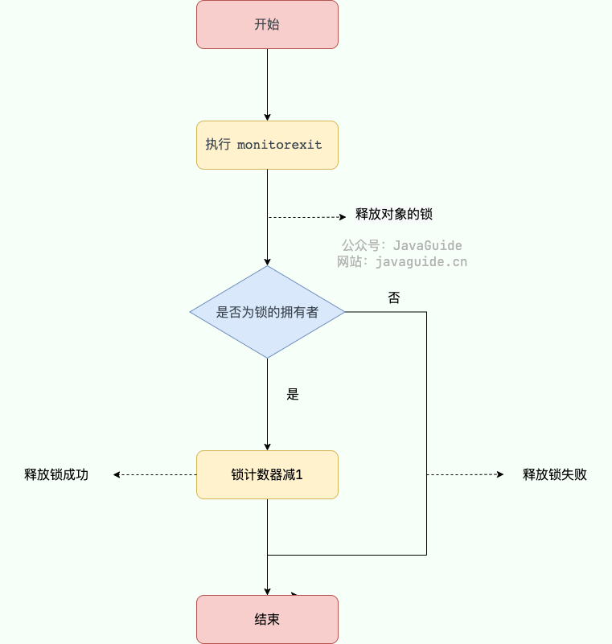
如果获取对象锁失败，那当前线程就要阻塞等待，直到锁被另外一个线程释放为止。
synchronized 修饰方法的情况
public class SynchronizedDemo2 {
public synchronized void method() {
System.out.println("synchronized 方法");
}
}
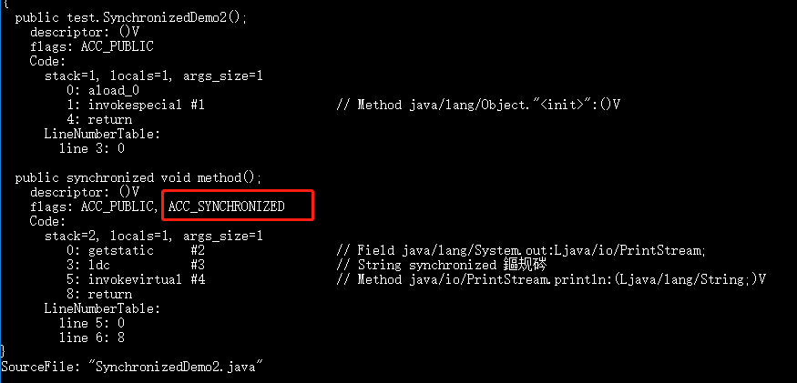
synchronized 修饰的方法并没有 monitorenter 指令和 monitorexit 指令，取而代之的是 ACC_SYNCHRONIZED 标识，该标识指明了该方法是一个同步方法。JVM 通过该 ACC_SYNCHRONIZED 访问标志来辨别一个方法是否声明为同步方法，从而执行相应的同步调用。
如果是实例方法，JVM 会尝试获取实例对象的锁。如果是静态方法，JVM 会尝试获取当前 class 的锁。
总结
synchronized 同步语句块的实现使用的是 monitorenter 和 monitorexit 指令，其中 monitorenter 指令指向同步代码块的开始位置，monitorexit 指令则指明同步代码块的结束位置。
synchronized 修饰的方法并没有 monitorenter 指令和 monitorexit 指令，取而代之的是 ACC_SYNCHRONIZED 标识，该标识指明了该方法是一个同步方法。
不过，两者的本质都是对对象监视器 monitor 的获取。
相关推荐：Java 锁与线程的那些事 - 有赞技术团队。
🧗🏻 进阶一下：学有余力的小伙伴可以抽时间详细研究一下对象监视器 monitor。
JDK1.6 之后的 synchronized 底层做了哪些优化？锁升级原理了解吗？
在 Java 6 之后， synchronized 引入了大量的优化如自旋锁、适应性自旋锁、锁消除、锁粗化、偏向锁、轻量级锁等技术来减少锁操作的开销，这些优化让 synchronized 锁的效率提升了很多（JDK18 中，偏向锁已经被彻底废弃，前面已经提到过了）。
锁主要存在四种状态，依次是：无锁状态、偏向锁状态、轻量级锁状态、重量级锁状态，他们会随着竞争的激烈而逐渐升级。注意锁可以升级不可降级，这种策略是为了提高获得锁和释放锁的效率。
synchronized 锁升级是一个比较复杂的过程，面试也很少问到，如果你想要详细了解的话，可以看看这篇文章：浅析 synchronized 锁升级的原理与实现。
synchronized 的偏向锁为什么被废弃了？
Open JDK 官方声明：JEP 374: Deprecate and Disable Biased Locking
在 JDK15 中，偏向锁被默认关闭（仍然可以使用 -XX:+UseBiasedLocking 启用偏向锁），在 JDK18 中，偏向锁已经被彻底废弃（无法通过命令行打开）。
在官方声明中，主要原因有两个方面：
- 性能收益不明显：
偏向锁是 HotSpot 虚拟机的一项优化技术，可以提升单线程对同步代码块的访问性能。
受益于偏向锁的应用程序通常使用了早期的 Java 集合 API，例如 HashTable、Vector，在这些集合类中通过 synchronized 来控制同步，这样在单线程频繁访问时，通过偏向锁会减少同步开销。
随着 JDK 的发展，出现了 ConcurrentHashMap 高性能的集合类，在集合类内部进行了许多性能优化，此时偏向锁带来的性能收益就不明显了。
偏向锁仅仅在单线程访问同步代码块的场景中可以获得性能收益。
如果存在多线程竞争，就需要 撤销偏向锁，这个操作的性能开销是比较昂贵的。偏向锁的撤销需要等待进入到全局安全点（safe point），该状态下所有线程都是暂停的，此时去检查线程状态并进行偏向锁的撤销。
- JVM 内部代码维护成本太高：
偏向锁将许多复杂代码引入到同步子系统，并且对其他的 HotSpot 组件也具有侵入性。这种复杂性为理解代码、系统重构带来了困难，因此， OpenJDK 官方希望禁用、废弃并删除偏向锁。
⭐️ synchronized 和 volatile 有什么区别？
synchronized 关键字和 volatile 关键字是两个互补的存在，而不是对立的存在！
volatile关键字是线程同步的轻量级实现，所以volatile性能肯定比synchronized关键字要好。但是volatile关键字只能用于变量而synchronized关键字可以修饰方法以及代码块。volatile关键字能保证数据的可见性，但不能保证数据的原子性。synchronized关键字两者都能保证。volatile关键字主要用于解决变量在多个线程之间的可见性，而synchronized关键字解决的是多个线程之间访问资源的同步性。
volatile 与 synchronized 的性能对比
上面提到 volatile 是线程同步的轻量级实现，性能比 synchronized 要好。下面从底层原理的角度分析为什么 volatile 性能更好，以及在什么情况下应该选择哪个。
周志明在《深入理解 Java 虚拟机》中指出：
volatile 变量的读操作的性能消耗与普通变量几乎没有什么差别，但是写操作则可能会慢上一些，因为它需要在本地代码中插入许多内存屏障指令来保证处理器不发生乱序执行。不过即便如此，大多数场景下 volatile 的总开销仍然要比锁来得更低。
二者性能差异的根本原因在于底层实现机制不同：
| 对比维度 | volatile |
synchronized |
|---|---|---|
| 实现层面 | 通过插入内存屏障指令实现，不涉及线程阻塞和上下文切换 | 依赖操作系统的互斥锁（Mutex Lock），涉及用户态与内核态的切换 |
| 读操作开销 | 与普通变量几乎相同 | 需要获取 monitor 锁，即使无竞争也有一定开销（偏向锁/轻量级锁 CAS） |
| 写操作开销 | 需要插入 StoreStore + StoreLoad 内存屏障，有一定开销但不会导致线程阻塞 |
需要获取和释放 monitor 锁，有竞争时会导致线程阻塞和上下文切换 |
| 竞争时的表现 | 不会导致线程阻塞，始终是非阻塞的 | 线程竞争激烈时，会频繁发生阻塞和唤醒，上下文切换开销大 |
| 功能范围 | 只能修饰变量，只保证可见性和有序性 | 可以修饰方法和代码块，同时保证可见性、有序性和原子性 |
选择建议：
- 如果只需要保证变量的可见性（如状态标志位、DCL 单例中的实例引用），优先使用
volatile，因为它的开销更小。 - 如果需要保证复合操作的原子性（如
i++、先检查后执行等），则必须使用synchronized、Lock或原子类，volatile无法胜任。
【ReentrantLock】
ReentrantLock 是什么？
ReentrantLock 实现了 Lock 接口，是一个可重入且独占式的锁，和 synchronized 关键字类似。不过，ReentrantLock 更灵活、更强大，增加了轮询、超时、中断、公平锁和非公平锁等高级功能。
public class ReentrantLock implements Lock, java.io.Serializable {}
ReentrantLock 里面有一个内部类 Sync，Sync 继承 AQS（AbstractQueuedSynchronizer），添加锁和释放锁的大部分操作实际上都是在 Sync 中实现的。Sync 有公平锁 FairSync 和非公平锁 NonfairSync 两个子类。
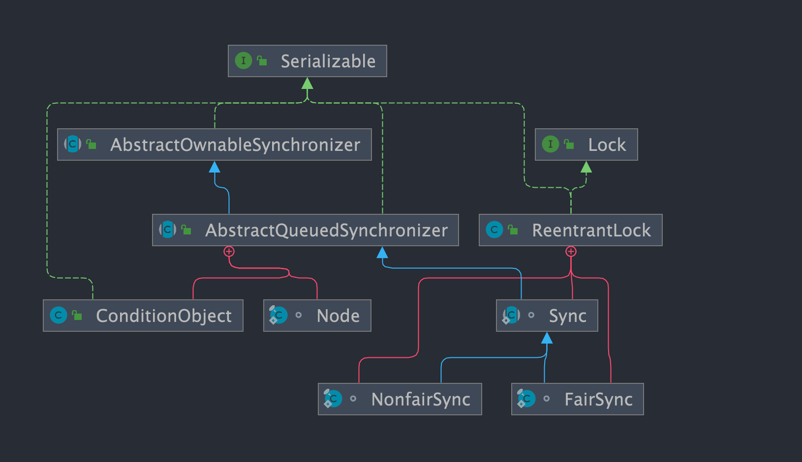
ReentrantLock 默认使用非公平锁，也可以通过构造器来显式的指定使用公平锁。
// 传入一个 boolean 值，true 时为公平锁，false 时为非公平锁
public ReentrantLock(boolean fair) {
sync = fair ? new FairSync() : new NonfairSync();
}
从上面的内容可以看出， ReentrantLock 的底层就是由 AQS 来实现的。关于 AQS 的相关内容推荐阅读 AQS 详解 这篇文章。
公平锁和非公平锁有什么区别？
- 公平锁 : 在存在竞争时，通常优先让等待时间最长的线程获得锁，但不保证操作系统的线程调度严格按时间顺序进行；
ReentrantLock的无参tryLock()也不会遵守公平设置。 - 非公平锁：锁被释放之后，后申请的线程可能会先获取到锁，是随机或者按照其他优先级排序的。性能更好，但可能会导致某些线程永远无法获取到锁。
⭐️ synchronized 和 ReentrantLock 有什么区别？
两者都是可重入锁
可重入锁 也叫递归锁，指的是线程可以再次获取自己的内部锁。比如一个线程获得了某个对象的锁，此时这个对象锁还没有释放，当其再次想要获取这个对象的锁的时候还是可以获取的，如果是不可重入锁的话，就会造成死锁。
JDK 中常用的锁（如 synchronized、ReentrantLock、ReentrantReadWriteLock）是可重入的，但并不是所有 Lock 实现都支持可重入，例如 StampedLock 就是不可重入的。
在下面的代码中，method1() 和 method2() 都被 synchronized 关键字修饰，method1() 调用了 method2()。
public class SynchronizedDemo {
public synchronized void method1() {
System.out.println("方法1");
method2();
}
public synchronized void method2() {
System.out.println("方法2");
}
}
由于 synchronized 锁是可重入的，同一个线程在调用 method1() 时可以直接获得当前对象的锁，执行 method2() 的时候可以再次获取这个对象的锁，不会产生死锁问题。假如 synchronized 是不可重入锁的话，由于该对象的锁已被当前线程所持有且无法释放，这就导致线程在执行 method2() 时获取锁失败，会出现死锁问题。
synchronized 依赖于 JVM 而 ReentrantLock 依赖于 API
synchronized 是依赖于 JVM 实现的，前面我们也讲到了 虚拟机团队在 JDK1.6 为 synchronized 关键字进行了很多优化，但是这些优化都是在虚拟机层面实现的，并没有直接暴露给我们。
ReentrantLock 是 JDK 层面实现的（也就是 API 层面，需要 lock() 和 unlock() 方法配合 try/finally 语句块来完成），所以我们可以通过查看它的源代码，来看它是如何实现的。
ReentrantLock 比 synchronized 增加了一些高级功能
相比 synchronized，ReentrantLock 增加了一些高级功能。主要来说主要有三点：
- 等待可中断 :
ReentrantLock提供了一种能够中断等待锁的线程的机制，通过lock.lockInterruptibly()来实现这个机制。也就是说当前线程在等待获取锁的过程中，如果其他线程中断当前线程「interrupt()」，当前线程就会抛出InterruptedException异常，可以捕捉该异常进行相应处理。 - 可配置公平策略 :
ReentrantLock可以指定公平或非公平策略，默认是非公平的，可通过ReentrantLock(boolean fair)构造方法配置。synchronized不提供公平性配置，也不承诺等待线程按先后顺序获得监视器。 - 通知机制更强大：
ReentrantLock通过绑定多个Condition对象，可以实现分组唤醒和选择性通知。这解决了synchronized只能随机唤醒或全部唤醒的效率问题，为复杂的线程协作场景提供了强大的支持。 - 支持超时：
ReentrantLock提供了tryLock(timeout)的方法，可以指定等待获取锁的最长等待时间，如果超过了等待时间，就会获取锁失败，不会一直等待。
如果你想使用上述功能，那么选择 ReentrantLock 是一个不错的选择。
关于 Condition 接口的补充：
Condition是 JDK1.5 之后才有的，它具有很好的灵活性，比如可以实现多路通知功能也就是在一个Lock对象中可以创建多个Condition实例（即对象监视器），线程对象可以注册在指定的Condition中，从而可以有选择性的进行线程通知，在调度线程上更加灵活。 在使用notify()/notifyAll()方法进行通知时，被通知的线程是由 JVM 选择的，用ReentrantLock类结合Condition实例可以实现“选择性通知”，这个功能非常重要，而且是Condition接口默认提供的。而synchronized关键字就相当于整个Lock对象中只有一个Condition实例，所有的线程都注册在它一个身上。如果执行notifyAll()方法的话就会通知所有处于等待状态的线程，这样会造成很大的效率问题。而Condition实例的signalAll()方法，只会唤醒注册在该Condition实例中的所有等待线程。
关于 等待可中断 的补充：
lockInterruptibly()会让获取锁的线程在阻塞等待的过程中可以响应中断，即当前线程在获取锁的时候，发现锁被其他线程持有，就会阻塞等待。在阻塞等待的过程中，如果其他线程中断当前线程
interrupt()，就会抛出InterruptedException异常，可以捕获该异常，做一些处理操作。为了更好理解这个方法，借用 Stack Overflow 上的一个案例，可以更好地理解
lockInterruptibly()可以响应中断：
public class MyReentrantLock {
Thread t = new Thread() {
@Override
public void run() {
ReentrantLock r = new ReentrantLock();
// 1.1、第一次尝试获取锁，可以获取成功
r.lock();
// 1.2、此时锁的重入次数为 1
System.out.println("lock() : lock count :" + r.getHoldCount());
// 2、中断当前线程，通过 Thread.currentThread().isInterrupted() 可以看到当前线程的中断状态为 true
interrupt();
System.out.println("Current thread is interrupted");
// 3.1、尝试获取锁，可以成功获取
r.tryLock();
// 3.2、此时锁的重入次数为 2
System.out.println("tryLock() on interrupted thread lock count :" + r.getHoldCount());
try {
// 4、打印线程的中断状态为 true，那么调用 lockInterruptibly() 方法就会抛出 InterruptedException 异常
System.out.println("Current Thread isInterrupted:" + Thread.currentThread().isInterrupted());
r.lockInterruptibly();
System.out.println("lockInterruptibly() --NOt executable statement" + r.getHoldCount());
} catch (InterruptedException e) {
r.lock();
System.out.println("Error");
} finally {
r.unlock();
}
// 5、打印锁的重入次数，可以发现 lockInterruptibly() 方法并没有成功获取到锁
System.out.println("lockInterruptibly() not able to Acqurie lock: lock count :" + r.getHoldCount());
r.unlock();
System.out.println("lock count :" + r.getHoldCount());
r.unlock();
System.out.println("lock count :" + r.getHoldCount());
}
};
public static void main(String str[]) {
MyReentrantLock m = new MyReentrantLock();
m.t.start();
}
}
输出：
lock() : lock count :1
Current thread is interrupted
tryLock() on interrupted thread lock count :2
Current Thread isInterrupted:true
Error
lockInterruptibly() not able to Acqurie lock: lock count :2
lock count :1
lock count :0
关于 支持超时 的补充：
为什么需要
tryLock(timeout)这个功能呢？
tryLock(timeout)方法尝试在指定的超时时间内获取锁。如果成功获取锁，则返回true；如果在锁可用之前超时，则返回false。此功能在以下几种场景中非常有用：
- 防止死锁： 在复杂的锁场景中，
tryLock(timeout)可以通过允许线程在合理的时间内放弃并重试来帮助防止死锁。- 提高响应速度： 防止线程无限期阻塞。
- 处理时间敏感的操作： 对于具有严格时间限制的操作，
tryLock(timeout)允许线程在无法及时获取锁时继续执行替代操作。
可中断锁和不可中断锁有什么区别？
它们的区别在于：线程在获取锁的过程中被阻塞时，是否能够因为中断而提前放弃等待。
- 不可中断锁：线程在等待锁期间即使收到中断信号，也不会退出阻塞状态，而是一直等待直到获得锁。中断状态会被保留，但不会影响锁的获取过程。
synchronized属于典型的不可中断锁。ReentrantLock#lock()也是不可中断的。- 可中断锁：线程在等待锁的过程中如果收到中断信号，会立即停止等待并抛出
InterruptedException，从而有机会进行取消或错误处理。 ReentrantLock#lockInterruptibly()实现了可中断锁。ReentrantLock#tryLock(long time, TimeUnit unit)（带超时的尝试获取）也是可中断的。
【ReentrantReadWriteLock】
ReentrantReadWriteLock 是什么？
ReentrantReadWriteLock 实现了 ReadWriteLock，是一个可重入的读写锁，既可以保证多个线程同时读的效率，同时又可以保证有写入操作时的线程安全。
public class ReentrantReadWriteLock
implements ReadWriteLock, java.io.Serializable{
}
public interface ReadWriteLock {
Lock readLock();
Lock writeLock();
}
- 一般锁进行并发控制的规则：读读互斥、读写互斥、写写互斥。
- 读写锁进行并发控制的规则：读读不互斥、读写互斥、写写互斥（只有读读不互斥）。
ReentrantReadWriteLock 其实是两把锁，一把是 WriteLock（写锁），一把是 ReadLock（读锁）。读锁是共享锁，写锁是独占锁。读锁可以被同时读，可以同时被多个线程持有，而写锁最多只能同时被一个线程持有。
和 ReentrantLock 一样，ReentrantReadWriteLock 底层也是基于 AQS 实现的。
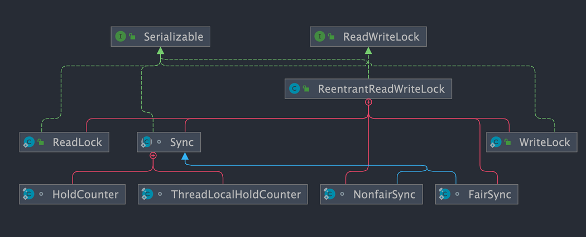
ReentrantReadWriteLock 也支持公平锁和非公平锁，默认使用非公平锁，可以通过构造器来显式地指定。
// 传入一个 boolean 值，true 时为公平锁，false 时为非公平锁
public ReentrantReadWriteLock(boolean fair) {
sync = fair ? new FairSync() : new NonfairSync();
readerLock = new ReadLock(this);
writerLock = new WriteLock(this);
}
ReentrantReadWriteLock 适合什么场景？
由于 ReentrantReadWriteLock 既可以保证多个线程同时读的效率，同时又可以保证有写入操作时的线程安全。因此，在读多写少的情况下，使用 ReentrantReadWriteLock 能够明显提升系统性能。
共享锁和独占锁有什么区别？
- 共享锁：一把锁可以被多个线程同时获得。
- 独占锁：一把锁只能被一个线程获得。
线程持有读锁还能获取写锁吗？
- 在线程持有读锁的情况下，该线程不能取得写锁（因为获取写锁的时候，如果发现当前的读锁被占用，就马上获取失败，不管读锁是不是被当前线程持有）。
- 在线程持有写锁的情况下，该线程可以继续获取读锁（获取读锁时如果发现写锁被占用，只有写锁没有被当前线程占用的情况才会获取失败）。
读写锁的源码分析，推荐阅读 聊聊 Java 的几把 JVM 级锁 - 阿里巴巴中间件 这篇文章，写的很不错。
读锁为什么不能升级为写锁？
写锁可以降级为读锁，但是 ReentrantReadWriteLock 不支持直接把读锁升级为写锁。关键原因是多个线程可能同时持有读锁：如果它们都在不释放读锁的情况下等待写锁，就会彼此等待而无法满足写锁的独占条件。需要升级时，应先释放读锁，再获取写锁，并在获得写锁后重新检查共享状态。
【StampedLock】
StampedLock 是什么？
StampedLock 是 JDK 1.8 引入的性能更好的读写锁，不可重入且不支持条件变量 Condition。
不同于一般的 Lock 类，StampedLock 并不是直接实现 Lock 或 ReadWriteLock 接口，而是基于 CLH 锁 独立实现的（AQS 也是基于这玩意）。
public class StampedLock implements java.io.Serializable {
}
StampedLock 提供了三种模式的读写控制模式：读锁、写锁和乐观读。
- 写锁：独占锁，一把锁只能被一个线程获得。当一个线程获取写锁后，其他请求读锁和写锁的线程必须等待。类似于
ReentrantReadWriteLock的写锁，不过这里的写锁是不可重入的。 - 读锁（悲观读）：共享锁，没有线程获取写锁的情况下，多个线程可以同时持有读锁。如果己经有线程持有写锁，则其他线程请求获取该读锁会被阻塞。类似于
ReentrantReadWriteLock的读锁，不过这里的读锁是不可重入的。 - 乐观读：允许多个线程获取乐观读以及读锁。同时允许一个写线程获取写锁。
另外，StampedLock 还支持这三种锁在一定条件下进行相互转换。
long tryConvertToWriteLock(long stamp){}
long tryConvertToReadLock(long stamp){}
long tryConvertToOptimisticRead(long stamp){}
StampedLock 在获取锁的时候会返回一个 long 型的数据戳，该数据戳用于稍后的锁释放参数，如果返回的数据戳为 0 则表示锁获取失败。当前线程持有了锁再次获取锁时返回情况要看当前持有什么锁、再次申请什么锁，以及使用的是阻塞方法还是 try 方法：
- 当前线程持有写锁，再次获取写锁：由于写锁是独占锁，第二次获取必须等待，但第一个写锁又要等待第二次调用返回后才能释放，于是当前线程把自己锁住了。结果就是一直阻塞，无法返回。
- 使用
tryWriteLock()时，会返回 0：tryWriteLock()不会一直等待，它会立即尝试。当获取成功，则返回非 0 的数据戳；获取失败，则返回 0。 - 同一线程再次获取悲观读锁，会返回新的数据戳：读锁是共享锁，读锁与读锁之间不冲突，所以正常返回数据戳。
真正的“可重入锁”会识别线程身份，虽然 StampedLock 这里同一个线程可以获取 2 次读锁，返回 2 个数据戳，但 StampedLock 不记录锁的线程所有权。判断是否可重入，重点看独占写锁。StampedLock 的写锁无法由同一个线程再次获取，所以它是不可重入的。
// 写锁
public long writeLock() {
long s, next; // bypass acquireWrite in fully unlocked case only
return ((((s = state) & ABITS) == 0L &&
U.compareAndSwapLong(this, STATE, s, next = s + WBIT)) ?
next : acquireWrite(false, 0L));
}
// 读锁
public long readLock() {
long s = state, next; // bypass acquireRead on common uncontended case
return ((whead == wtail && (s & ABITS) < RFULL &&
U.compareAndSwapLong(this, STATE, s, next = s + RUNIT)) ?
next : acquireRead(false, 0L));
}
// 乐观读
public long tryOptimisticRead() {
long s;
return (((s = state) & WBIT) == 0L) ? (s & SBITS) : 0L;
}
StampedLock 的性能为什么更好？
相比于传统读写锁多出来的乐观读是 StampedLock 比 ReadWriteLock 性能更好的关键原因。StampedLock 的乐观读允许一个写线程获取写锁，所以不会导致所有写线程阻塞，也就是当读多写少的时候，写线程有机会获取写锁，减少了线程饥饿的问题，吞吐量大大提高。
StampedLock 适合什么场景？
和 ReentrantReadWriteLock 一样，StampedLock 同样适合读多写少的业务场景，可以作为 ReentrantReadWriteLock 的替代品，性能更好。
不过，需要注意的是 StampedLock 不可重入，不支持条件变量 Condition，对中断操作支持也不友好（使用不当容易导致 CPU 飙升）。如果你需要用到 ReentrantLock 的一些高级性能，就不太建议使用 StampedLock 了。
另外，StampedLock 性能虽好，但使用起来相对比较麻烦，一旦使用不当，就会出现生产问题。强烈建议你在使用 StampedLock 之前，看看 StampedLock 官方文档中的案例。
StampedLock 的底层原理了解吗？
StampedLock 不是直接实现 Lock 或 ReadWriteLock 接口，而是基于 CLH 锁 实现的（AQS 也是基于这玩意），CLH 锁是对自旋锁的一种改良，是一种隐式的链表队列。StampedLock 通过 CLH 队列进行线程的管理，通过同步状态值 state 来表示锁的状态和类型。
StampedLock 的原理和 AQS 原理比较类似，这里就不详细介绍了，感兴趣的可以看看下面这两篇文章：
如果你只是准备面试的话，建议多花点精力搞懂 AQS 原理即可，StampedLock 底层原理在面试中遇到的概率非常小。
参考
- 《深入理解 Java 虚拟机》
- 《实战 Java 高并发程序设计》
- Guide to the Volatile Keyword in Java - Baeldung：
- 不可不说的 Java“锁”事 - 美团技术团队：
- 在 ReadWriteLock 类中读锁为什么不能升级为写锁？：
- 高性能解决线程饥饿的利器 StampedLock：
- 理解 Java 中的 ThreadLocal - 技术小黑屋：
- ThreadLocal (Java Platform SE 8 ) - Oracle Help Center：
【ThreadLocal】
ThreadLocal 有什么用？
通常情况下，我们创建的变量可以被任何一个线程访问和修改。这在多线程环境中可能导致数据竞争和线程安全问题。那么，如果想让每个线程都有自己的专属本地变量，该如何实现呢？
JDK 中提供的 ThreadLocal 类正是为了解决这个问题。ThreadLocal 类允许每个线程绑定自己的值，可以将其形象地比喻为一个“存放数据的盒子”。每个线程都有自己独立的盒子，用于存储私有数据，确保不同线程之间的数据互不干扰。
当你创建一个 ThreadLocal 变量时，每个访问该变量的线程都会拥有一个独立的副本。这也是 ThreadLocal 名称的由来。线程可以通过 get() 方法获取自己线程的本地副本，或通过 set() 方法修改该副本的值，从而避免了线程安全问题。
举个简单的例子：假设有两个人去宝屋收集宝物。如果他们共用一个袋子，必然会产生争执；但如果每个人都有一个独立的袋子，就不会有这个问题。如果将这两个人比作线程，那么 ThreadLocal 就是用来避免这两个线程竞争同一个资源的方法。
public class ThreadLocalExample {
private static ThreadLocal threadLocal = ThreadLocal.withInitial(() -> 0);
public static void main(String[] args) {
Runnable task = () -> {
int value = threadLocal.get();
value += 1;
threadLocal.set(value);
System.out.println(Thread.currentThread().getName() + " Value: " + threadLocal.get());
};
Thread thread1 = new Thread(task, "Thread-1");
Thread thread2 = new Thread(task, "Thread-2");
thread1.start(); // 输出: Thread-1 Value: 1
thread2.start(); // 输出: Thread-2 Value: 1
}
}
⭐️ ThreadLocal 原理了解吗？
从 Thread 类源代码入手。
public class Thread implements Runnable {
//......
//与此线程有关的ThreadLocal值。由ThreadLocal类维护
ThreadLocal.ThreadLocalMap threadLocals = null;
//与此线程有关的InheritableThreadLocal值。由InheritableThreadLocal类维护
ThreadLocal.ThreadLocalMap inheritableThreadLocals = null;
//......
}
从上面 Thread 类 源代码可以看出 Thread 类中有一个 threadLocals 和 一个 inheritableThreadLocals 变量，它们都是 ThreadLocalMap 类型的变量，我们可以把 ThreadLocalMap 理解为 ThreadLocal 类实现的定制化的 HashMap。默认情况下这两个变量都是 null，只有当前线程调用 ThreadLocal 类的 set 或 get 方法时才创建它们，实际上调用这两个方法的时候，我们调用的是 ThreadLocalMap 类对应的 get()、set() 方法。
ThreadLocal 类的 set() 方法
public void set(T value) {
//获取当前请求的线程
Thread t = Thread.currentThread();
//取出 Thread 类内部的 threadLocals 变量(哈希表结构)
ThreadLocalMap map = getMap(t);
if (map != null)
// 将需要存储的值放入到这个哈希表中
map.set(this, value);
else
createMap(t, value);
}
ThreadLocalMap getMap(Thread t) {
return t.threadLocals;
}
通过上面这些内容，我们足以通过猜测得出结论：最终的变量是放在了当前线程的 ThreadLocalMap 中，并不是存在 ThreadLocal 上，ThreadLocal 可以理解为只是 ThreadLocalMap 的封装，传递了变量值。 ThrealLocal 类中可以通过 Thread.currentThread() 获取到当前线程对象后，直接通过 getMap(Thread t) 可以访问到该线程的 ThreadLocalMap 对象。
每个 Thread 中都具备一个 ThreadLocalMap，而 ThreadLocalMap 可以存储以 ThreadLocal 为 key，Object 对象为 value 的键值对。
ThreadLocalMap(ThreadLocal<?> firstKey, Object firstValue) {
//......
}
比如我们在同一个线程中声明了两个 ThreadLocal 对象的话， Thread 内部都是使用仅有的那个 ThreadLocalMap 存放数据的，ThreadLocalMap 的 key 就是 ThreadLocal 对象，value 就是 ThreadLocal 对象调用 set 方法设置的值。
ThreadLocal 数据结构如下图所示：
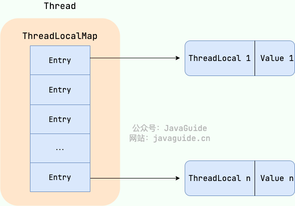
ThreadLocalMap 是 ThreadLocal 的静态内部类。
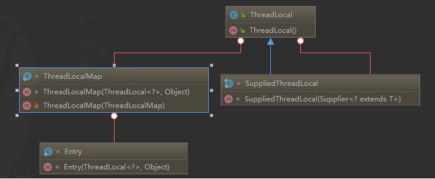
⭐️ ThreadLocal 内存泄露问题是怎么导致的？
ThreadLocal 内存泄漏的根本原因在于其内部实现机制。
通过上面的内容我们已经知道：每个线程维护一个名为 ThreadLocalMap 的 map。 当你使用 ThreadLocal 存储值时，实际上是将值存储在当前线程的 ThreadLocalMap 中，其中 ThreadLocal 实例本身作为 key，而你要存储的值作为 value。
ThreadLocal 的 set() 方法源码如下：
public void set(T value) {
Thread t = Thread.currentThread(); // 获取当前线程
ThreadLocalMap map = getMap(t); // 获取当前线程的 ThreadLocalMap
if (map != null) {
map.set(this, value); // 设置值
} else {
createMap(t, value); // 创建新的 ThreadLocalMap
}
}
ThreadLocalMap 的 set() 和 createMap() 方法中，并没有直接存储 ThreadLocal 对象本身，而是使用 ThreadLocal 的哈希值计算数组索引，最终存储于类型为 static class Entry extends WeakReference> 的数组中。
int i = key.threadLocalHashCode & (len-1);
ThreadLocalMap 的 Entry 定义如下：
static class Entry extends WeakReference> {
Object value;
Entry(ThreadLocal<?> k, Object v) {
super(k);
value = v;
}
}
ThreadLocalMap 的 key 和 value 引用机制：
- key 是弱引用：
ThreadLocalMap中的 key 是ThreadLocal的弱引用 (WeakReference>)。 这意味着，如果ThreadLocal实例不再被任何强引用指向，垃圾回收器会在下次 GC 时回收该实例，导致ThreadLocalMap中对应的 key 变为null。 - value 是强引用：即使
key被 GC 回收，value仍然被ThreadLocalMap.Entry强引用存在，无法被 GC 回收。
当 ThreadLocal 实例失去强引用后，其对应的 value 仍然存在于 ThreadLocalMap 中，因为 Entry 对象强引用了它。如果线程持续存活（例如线程池中的线程），ThreadLocalMap 也会一直存在，导致 key 为 null 的 entry 无法被垃圾回收，即会造成内存泄漏。
也就是说，内存泄漏的发生需要同时满足两个条件：
ThreadLocal实例不再被强引用；- 线程持续存活，导致
ThreadLocalMap长期存在。
虽然 ThreadLocalMap 在 get(), set() 和 remove() 操作时会尝试清理 key 为 null 的 entry，但这种清理机制是被动的，并不完全可靠。
如何避免内存泄漏的发生？
- 在使用完
ThreadLocal后，务必调用remove()方法。 这是最安全和最推荐的做法。remove()方法会从ThreadLocalMap中显式地移除对应的 entry，彻底解决内存泄漏的风险。 即使将ThreadLocal定义为static final，也强烈建议在每次使用后调用remove()。 - 在线程池等线程复用的场景下，使用
try-finally块可以确保即使发生异常，remove()方法也一定会被执行。
为什么 Entry 的 key 要设计为弱引用？
这是一个经典的面试追问。很多同学知道 ThreadLocalMap 的 key 是弱引用，但不清楚为什么要这样设计，以及如果换成强引用会怎样。
我们先来看完整的引用链路。当一个线程使用 ThreadLocal 时，涉及以下引用关系：
强引用（栈/静态变量）──→ ThreadLocal 实例
↑
Thread ──→ ThreadLocalMap ──→ Entry ─── key（WeakReference）──┘
│
└─── value（强引用）──→ 实际存储的对象
理解了这条引用链路，我们来对比两种设计方案：
假设 key 使用强引用（实际没有采用）：
当业务代码中的 ThreadLocal 引用被置为 null（例如方法执行结束、对象被回收），此时虽然业务代码已经不再需要这个 ThreadLocal，但由于 ThreadLocalMap 的 Entry 对 key 持有强引用，ThreadLocal 实例仍然无法被 GC 回收。只要线程不终止，这个 ThreadLocal 和它对应的 value 都会一直存在于内存中，造成 key 和 value 都无法回收的内存泄漏。
key 使用弱引用（实际采用的方案）：
当业务代码中的 ThreadLocal 引用被置为 null 后，由于 Entry 的 key 是弱引用，ThreadLocal 实例在下次 GC 时会被回收，key 变为 null。此时虽然 value 仍然存在（强引用），但 ThreadLocalMap 在执行 get()、set()、remove() 等操作时，会主动探测并清理这些 key 为 null 的 "stale entry"（过期条目），从而释放 value 对象。
也就是说，弱引用的设计是一种“兜底”防御机制——即便开发者忘记调用 remove()，JVM 的 GC 配合 ThreadLocalMap 的自清理逻辑，仍然有机会回收泄漏的数据。而如果使用强引用，一旦忘记 remove()，就完全没有任何补救机会了。
需要注意的是，这种自清理机制是被动触发的（只在
get/set/remove操作时顺便清理），并不能保证所有过期条目都被及时清理。因此，弱引用只是降低了内存泄漏的风险，并没有彻底消除它，手动调用remove()仍然是必须的。
线程池场景下的特殊风险
上面提到内存泄漏的条件之一是“线程持续存活”。在使用 new Thread() 创建线程的场景下，线程执行完毕后会被销毁，其持有的 ThreadLocalMap 也会随之被 GC 回收，泄漏的影响相对有限。
但在线程池场景下，问题会被严重放大。线程池中的核心线程默认不会被销毁，它们会被反复复用来执行不同的任务。这意味着：
- 内存泄漏可能累积：如果任务不断创建新的临时
ThreadLocal，或使用多个ThreadLocal却没有清理，失去强引用的 key 被回收后，对应 value 仍可能残留在复用线程的ThreadLocalMap中。对同一个仍可达的ThreadLocal反复调用set()通常会替换旧 value，但最新 value 仍会一直保留到被覆盖、移除、清理或线程终止。 - 数据污染（脏数据）：上一个任务设置的
ThreadLocal值，如果没有被清理，下一个被分配到同一线程的任务就能读取到这个残留值。这可能导致严重的业务逻辑错误，比如用户 A 的请求读取到了用户 B 的身份信息。
美团技术团队的真实事故案例：
美团技术团队在《Java 线程池实现原理及其在美团业务中的实践》一文中就记录了一次因 ThreadLocal 使用不当引发的线上事故：在一个依赖 ThreadLocal 传递用户上下文的 Web 应用中，由于使用了线程池处理请求，且没有在请求结束后清理 ThreadLocal，导致后续请求复用了同一线程时，读取到了前一个请求遗留的用户信息，造成了用户数据串号的严重问题。
阿里巴巴 Java 开发手册的强制规约
正因为线程池 + ThreadLocal 的组合如此容易踩坑，《阿里巴巴 Java 开发手册》在“并发处理”章节中对此做出了强制级别的要求：
【强制】 必须回收自定义的
ThreadLocal变量记录的当前线程的值，尤其在线程池场景下，线程经常会被复用，如果不清理自定义的ThreadLocal变量，可能会影响后续业务逻辑和造成内存泄露等问题。尽量在代理中使用try-finally块进行回收。
正确的使用模式如下：
// 定义为 static final，避免重复创建 ThreadLocal 实例
private static final ThreadLocal userContextHolder = new ThreadLocal<>();
public void processRequest(HttpServletRequest request) {
try {
// 在 try 块中设置值
UserContext context = buildUserContext(request);
userContextHolder.set(context);
// 执行业务逻辑
doBusinessLogic();
} finally {
// 在 finally 块中必须清理，确保无论是否发生异常都会执行
userContextHolder.remove();
}
}
这里有三个关键要点：
ThreadLocal声明为static final：确保该字段对应的ThreadLocal实例不会在每次调用时重复创建，避免旧实例失去强引用后留下过期条目；这并不意味着整个应用只能有一个ThreadLocal实例。try-finally保证remove()一定被执行：即使业务逻辑抛出异常，finally块也能确保ThreadLocal被清理。- 在使用完毕后立即清理，而不是依赖下次使用前覆盖：对同一个
ThreadLocal调用set()会替换旧 value，但在下一次任务到来前，旧值仍会被线程持有；如果代码改为使用其他ThreadLocal，过期条目还可能长期残留。用完后在finally中调用remove()，可以及时避免内存占用和数据污染。
⭐️ 如何跨线程传递 ThreadLocal 的值？
为什么 ThreadLocal 在异步场景下会失效？
ThreadLocal 的值不在 ThreadLocal 对象中，而是存储在 Thread 里：
Thread → ThreadLocalMap → Entry(ThreadLocal, value)
ThreadLocal 数据结构如下图所示：
异步执行往往意味着任务会从当前线程切换到另一个线程（例如线程池中的工作线程）执行。由于不同线程各自维护独立的 ThreadLocalMap，默认情况下 ThreadLocal 的上下文无法在异步执行中自动传递。
如何跨线程传递 ThreadLocal 的值？
为了解决这个问题，业界有两套主流的解决方案，一套是 JDK 原生的，另一套是阿里巴巴开源的。
InheritableThreadLocal：JDK1.2 提供的一个类，继承自ThreadLocal。使用InheritableThreadLocal时，会在创建子线程时，令子线程继承父线程中的ThreadLocal值，但是无法支持线程池场景下的ThreadLocal值传递。TransmittableThreadLocal：TransmittableThreadLocal（简称 TTL） 是阿里巴巴开源的工具类，继承并加强了InheritableThreadLocal类，可以在线程池的场景下支持ThreadLocal值传递。项目地址：。
InheritableThreadLocal 原理
InheritableThreadLocal 实现了创建异步线程时，继承父线程 ThreadLocal 值的功能。该类是 JDK 团队提供的，通过改造 JDK 源码包中的 Thread 类来实现创建线程时，ThreadLocal 值的传递。
InheritableThreadLocal 的值存储在哪里？
在 Thread 类中添加了一个新的 ThreadLocalMap，命名为 inheritableThreadLocals，该变量用于存储需要跨线程传递的 ThreadLocal 值。如下：
class Thread implements Runnable {
ThreadLocal.ThreadLocalMap threadLocals = null;
ThreadLocal.ThreadLocalMap inheritableThreadLocals = null;
}
如何完成 ThreadLocal 值的传递？
通过改造 Thread 类的构造方法来实现，在创建 Thread 线程时，拿到父线程的 inheritableThreadLocals 变量赋值给子线程即可。相关代码如下：
// Thread 的构造方法会调用 init() 方法
private void init(/* ... */) {
// 1、获取父线程
Thread parent = currentThread();
// 2、将父线程的 inheritableThreadLocals 赋值给子线程
if (inheritThreadLocals && parent.inheritableThreadLocals != null)
this.inheritableThreadLocals =
ThreadLocal.createInheritedMap(parent.inheritableThreadLocals);
}
InheritableThreadLocal 的方案有什么问题？
这个方案的缺陷在于它的一次性，也就是它只在线程创建时发生一次复制。然而，现在的开发中，我们会大量使用线程池，但线程池里的线程是被复用的。
想象一下，任务 A 在线程 1 中执行，把它的 ThreadLocal 值传给了线程池里的子线程 2。任务 A 结束后，线程 1 去休息了。接着，任务 B 来了，它在线程 3 中执行，线程池又复用了刚才那个子线程 2 来执行任务 B 的一部分。此时，子线程 2 的 ThreadLocal 里还残留着任务 A 传给它的脏数据，而任务 B（在线程 3 里）的上下文却完全没有传递过来。这就导致了数据污染和上下文丢失。
TransmittableThreadLocal 原理
JDK 默认没有支持线程池场景下 ThreadLocal 值传递的功能，因此阿里巴巴开源了一套工具 TransmittableThreadLocal 来实现该功能。
由于阿里巴巴无法改动 JDK 源码，TTL 巧妙地利用了装饰器模式对任务（Runnable/Callable）或线程池（Executor）进行增强，将上下文的传递时机从“线程创建时”延迟到了“任务提交与执行时”。
TTL 的核心逻辑可以概括为三个阶段（CRR）：
- Capture（捕获）：在提交任务（如调用
execute）的一瞬间，TtlRunnable会调用TransmittableThreadLocal.Transmitter.capture()。它通过内部维护的holder集合，抓取当前父线程中所有活跃的 TTL 变量并存入快照。 - Replay（回放）：在线程池的工作线程执行
run()方法前，调用replay()。它将快照中的值set到当前工作线程中，并备份该线程原有的旧值。 - Restore（恢复）：任务执行结束后，调用
restore()。它根据备份将工作线程恢复到执行前的状态，防止上下文污染或内存泄漏。
这张图是 TTL 官方提供的 CRR 整个过程的时序图：
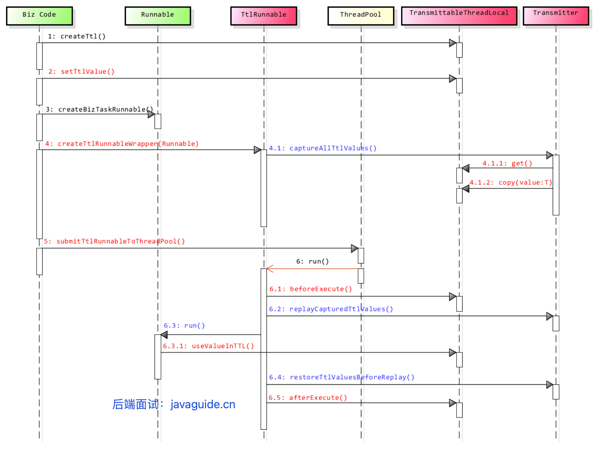
不太好理解吧？可以看下我绘制的这张 CRR 时序图，更清晰直观一些：
sequenceDiagram
participant P as 父线程（Submitter）
participant W as TTL 包装器（TtlRunnable / Agent）
participant C as 线程池工作线程（Worker）
Note over P: 1. set context = "A"
P->>W: 2. 提交任务（Capture）
Note right of W: 捕获父线程中所有活跃的 TTL 变量快照
W->>C: 3. 执行任务 run()
Note over C: 4. Replay
Note right of C: 备份工作线程原有 TTL 值并设置 Capture 得到的值
Note over C: 5. 业务逻辑执行get context = "A"
Note over C: 6. Restore
Note right of C: 恢复工作线程原有 TTL 值防止上下文污染
C-->>P: 7. 任务执行结束也就是说，TTL 的本质是在任务提交时 Capture 上下文，在任务执行前 Replay 上下文，在任务结束后 Restore 线程状态，从而安全地支持线程池中的 ThreadLocal 传递。
TTL 提供了两种主要的接入方式，可根据侵入性要求和改造成本进行选择。
1. 显式包装（手动接入）
使用 TtlRunnable.get(Runnable) 或 TtlCallable.get(Callable) 对任务进行包装，使用 TtlExecutors.getTtlExecutor(Executor)、getTtlExecutorService(...) 对线程池进行包装。这种接入方式清晰可控，但需要业务代码配合，存在一定侵入性。
下面这段代码展示了 TTL 通过 CRR，在支持线程池复用和拒绝策略的前提下，安全地传递并隔离 ThreadLocal 上下文。
public class TtlContextHolder {
private static final Logger log = LoggerFactory.getLogger(TtlContextHolder.class);
// 1. 使用 static final 确保 TTL 实例不被重复创建，防止内存泄漏
// 重写 copy 方法（可选）：如果是引用类型，建议实现深拷贝
private static final TransmittableThreadLocal CONTEXT = new TransmittableThreadLocal() {
@Override
public String copy(String parentValue) {
// 默认是直接返回引用，如果是可变对象（如 Map），请在这里 new 新对象
return parentValue;
}
};
// 2. 线程池初始化：确保只被 TtlExecutors 包装一次
private static final ExecutorService TTL_EXECUTOR_SERVICE;
static {
ExecutorService rawExecutor = new ThreadPoolExecutor(
2, 4, 60L, TimeUnit.SECONDS,
new LinkedBlockingQueue<>(1000), (Runnable r) -> new Thread(r, "ttl-worker-" + r.hashCode()),
new ThreadPoolExecutor.CallerRunsPolicy() // 关键：TTL 完美支持此拒绝策略
);
// 包装原始线程池
TTL_EXECUTOR_SERVICE = TtlExecutors.getTtlExecutorService(rawExecutor);
}
public static void main(String[] args) throws Exception {
try {
// 3. 在父线程中设置上下文
CONTEXT.set("value-set-in-parent");
log.info("父线程上下文: {}", CONTEXT.get());
// 4. 使用 Lambda 简化任务提交
TTL_EXECUTOR_SERVICE.execute(() -> {
log.info("异步任务(Runnable)读取上下文: {}", CONTEXT.get());
// 模拟业务逻辑
// 注意：子线程修改是否影响父线程，取决于 copy() 是否做了深拷贝
CONTEXT.set("value-modified-in-child");
});
Future future = TTL_EXECUTOR_SERVICE.submit(() -> {
log.info("异步任务(Callable)读取上下文: {}", CONTEXT.get());
return "Success";
});
future.get();
// 5. 验证父线程上下文是否被污染
log.info("父线程最终上下文: {}", CONTEXT.get());
} finally {
// 6. 清理当前线程（父线程）的上下文，子线程的上下文由 TTL 的 Restore 机制自动恢复
CONTEXT.remove();
}
}
}
输出：
09:06:31.438 INFO [main] TtlContextHolder - 父线程上下文: value-set-in-parent
09:06:31.452 INFO [ttl-worker-1663166483] TtlContextHolder - 异步任务(Runnable)读取上下文: value-set-in-parent
09:06:31.453 INFO [ttl-worker-841283083] TtlContextHolder - 异步任务(Callable)读取上下文: value-set-in-parent
09:06:31.453 INFO [main] TtlContextHolder - 父线程最终上下文: value-set-in-parent
如果你想要测试这段代码，记得引入 TTL 的 Maven 依赖；
com.alibaba
transmittable-thread-local
2.14.4
2. 无侵入接入（Java Agent）
通过 Java Agent 在类加载阶段对线程池相关类进行 字节码增强，自动织入 TTL 的上下文传递逻辑，实现业务代码零改造的上下文透传。这种方式业务代码无需感知 TTL 的存在，但实现复杂度相对较高。
TTL Agent 默认修饰了以下 JDK 执行器组件：
- 标准线程池：
java.util.concurrent.ThreadPoolExecutor和java.util.concurrent.ScheduledThreadPoolExecutor。 - ForkJoin 体系：
java.util.concurrent.ForkJoinTask（从而透明支持了CompletableFuture和 Java 8 并行流Stream）。 - 遗留组件：
java.util.TimerTask（自 v2.7.0 起支持，v2.11.2 起默认开启）。
在 Java 启动参数中加入 -javaagent 配置：
# 基础配置
java -javaagent:path/to/transmittable-thread-local-2.x.y.jar \
-cp classes \
com.your.app.Main
应用场景
- 压测流量标记： 在压测场景中，使用
ThreadLocal存储压测标记，用于区分压测流量和真实流量。如果标记丢失，可能导致压测流量被错误地当成线上流量处理。 - 上下文传递：在分布式系统中，传递链路追踪信息（如 Trace ID）或用户上下文信息。
总结
ThreadLocal 的值默认是无法跨线程传递的，因为它的值是存在每个 Thread 对象自己的 ThreadLocalMap 里的，父子线程是两个不同的对象。
为了解决这个问题，主要有两种方案：
- JDK 的 InheritableThreadLocal：它会在创建子线程的时候，把父线程的值复制一份给子线程。但它的问题是，在线程池场景下会失效。因为线程池会复用线程，这会导致线程拿到的可能是上一个任务传下来的脏数据。
- 阿里的 TransmittableThreadLocal (TTL)：这是我们项目里用的方案，它专门解决线程池的问题。它的原理是，在提交任务到线程池时，它会把父线程的
ThreadLocal值捕获下来，和任务绑定在一起。等线程池里的某个线程要执行这个任务时，它再把捕获的值设置到这个线程上，任务执行完再清理掉。
简单说，InheritableThreadLocal 是跟线程绑定的，只在创建时有效；而 TTL 是跟任务绑定的，完美支持线程池。
【线程池】
什么是线程池？
顾名思义，线程池就是管理一系列线程的资源池。当有任务要处理时，直接从线程池中获取线程来处理，处理完之后线程并不会立即被销毁，而是等待下一个任务。
⭐️ 为什么要用线程池？
池化技术想必大家已经屡见不鲜了，线程池、数据库连接池、HTTP 连接池等等都是对这个思想的应用。池化技术的思想主要是为了减少每次获取资源的消耗，提高对资源的利用率。
线程池提供了一种限制和管理资源（包括执行一个任务）的方式。 每个线程池还维护一些基本统计信息，例如已完成任务的数量。使用线程池主要带来以下几个好处：
- 降低资源消耗：线程池里的线程是可以重复利用的。一旦线程完成了某个任务，它不会立即销毁，而是回到池子里等待下一个任务。这就避免了频繁创建和销毁线程带来的开销。
- 提高响应速度：因为线程池里通常会维护一定数量的核心线程（或者说“常驻工人”），任务来了之后，可以直接交给这些已经存在的、空闲的线程去执行，省去了创建线程的时间，任务能够更快地得到处理。
- 提高线程的可管理性：线程池允许我们统一管理池中的线程。我们可以配置线程池的大小（核心线程数、最大线程数）、任务队列的类型和大小、拒绝策略等。这样就能控制并发线程的总量，防止资源耗尽，保证系统的稳定性。同时，线程池通常也提供了监控接口，方便我们了解线程池的运行状态（比如有多少活跃线程、多少任务在排队等），便于调优。
如何创建线程池？
在 Java 中，创建线程池主要有两种方式：
方式一：通过 ThreadPoolExecutor 构造函数直接创建（推荐）
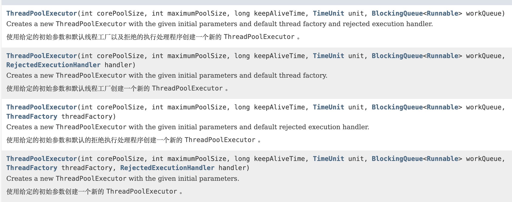
图中的“默认线程工厂”和“默认拒绝策略”，指的是当前构造函数没有显式传入对应参数时，ThreadPoolExecutor 会使用默认实现，并不是方法和说明错位。
这是最推荐的方式，因为它允许开发者明确指定线程池的核心参数，对线程池的运行行为有更精细的控制，从而避免资源耗尽的风险。
方式二：通过 Executors 工具类创建（不推荐用于生产环境）
Executors 工具类提供的创建线程池的方法如下图所示：
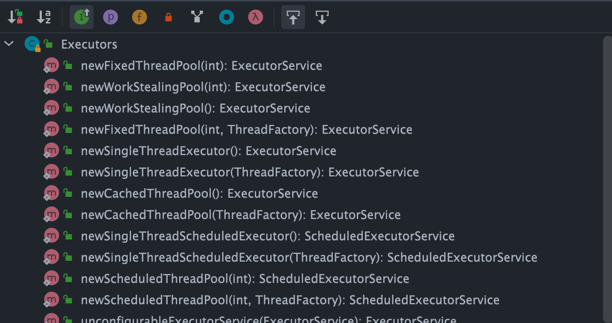
可以看出，通过 Executors 工具类可以创建多种类型的线程池，包括：
FixedThreadPool：正常运行时最多使用固定数量的工作线程。线程可以因异常终止后被替换，线程池关闭时也会退出，因此并非在整个生命周期中数量始终不变。当有一个新的任务提交时，线程池中若有空闲线程，则立即执行。若没有，则新的任务会被暂存在一个任务队列中，待有线程空闲时，便处理在任务队列中的任务。SingleThreadExecutor： 只有一个线程的线程池。若多余一个任务被提交到该线程池，任务会被保存在一个任务队列中，待线程空闲，按先入先出的顺序执行队列中的任务。CachedThreadPool： 可根据实际情况调整线程数量的线程池。线程池的线程数量不确定，但若有空闲线程可以复用，则会优先使用可复用的线程。若所有线程均在工作，又有新的任务提交，则会创建新的线程处理任务。所有线程在当前任务执行完毕后，将返回线程池进行复用。ScheduledThreadPool：给定的延迟后运行任务或者定期执行任务的线程池。
⭐️ 为什么不推荐使用内置线程池？
在《阿里巴巴 Java 开发手册》“并发处理”这一章节，明确指出线程资源必须通过线程池提供，不允许在应用中自行显式创建线程。
为什么呢？
使用线程池的好处是减少在创建和销毁线程上所消耗的时间以及系统资源开销，解决资源不足的问题。如果不使用线程池，有可能会造成系统创建大量同类线程而导致消耗完内存或者“过度切换”的问题。
另外，《阿里巴巴 Java 开发手册》中强制线程池不允许使用 Executors 去创建，而是通过 ThreadPoolExecutor 构造函数的方式，这样的处理方式让写的同学更加明确线程池的运行规则，规避资源耗尽的风险
Executors 返回线程池对象的弊端如下（后文会详细介绍到）：
FixedThreadPool和SingleThreadExecutor:使用的是阻塞队列LinkedBlockingQueue，任务队列最大长度为Integer.MAX_VALUE，可以看作是无界的，可能堆积大量的请求，从而导致 OOM。CachedThreadPool:使用的是同步队列SynchronousQueue, 允许创建的线程数量为Integer.MAX_VALUE，如果任务数量过多且执行速度较慢，可能会创建大量的线程，从而导致 OOM。ScheduledThreadPool和SingleThreadScheduledExecutor:使用的无界的延迟阻塞队列DelayedWorkQueue，任务队列最大长度为Integer.MAX_VALUE,可能堆积大量的请求，从而导致 OOM。
public static ExecutorService newFixedThreadPool(int nThreads) {
// LinkedBlockingQueue 的默认长度为 Integer.MAX_VALUE，可以看作是无界的
return new ThreadPoolExecutor(nThreads, nThreads,0L, TimeUnit.MILLISECONDS,new LinkedBlockingQueue());
}
public static ExecutorService newSingleThreadExecutor() {
// LinkedBlockingQueue 的默认长度为 Integer.MAX_VALUE，可以看作是无界的
return new FinalizableDelegatedExecutorService (new ThreadPoolExecutor(1, 1,0L, TimeUnit.MILLISECONDS,new LinkedBlockingQueue()));
}
// 同步队列 SynchronousQueue，没有容量，最大线程数是 Integer.MAX_VALUE`
public static ExecutorService newCachedThreadPool() {
return new ThreadPoolExecutor(0, Integer.MAX_VALUE,60L, TimeUnit.SECONDS,new SynchronousQueue());
}
// DelayedWorkQueue（延迟阻塞队列）
public static ScheduledExecutorService newScheduledThreadPool(int corePoolSize) {
return new ScheduledThreadPoolExecutor(corePoolSize);
}
public ScheduledThreadPoolExecutor(int corePoolSize) {
super(corePoolSize, Integer.MAX_VALUE, 0, NANOSECONDS,
new DelayedWorkQueue());
}
⭐️ 线程池常见参数有哪些？如何解释？
/**
* 用给定的初始参数创建一个新的ThreadPoolExecutor。
*/
public ThreadPoolExecutor(int corePoolSize,//线程池的核心线程数量
int maximumPoolSize,//线程池的最大线程数
long keepAliveTime,//当线程数大于核心线程数时，多余的空闲线程存活的最长时间
TimeUnit unit,//时间单位
BlockingQueue workQueue,//任务队列，用来储存等待执行任务的队列
ThreadFactory threadFactory,//线程工厂，用来创建线程，一般默认即可
RejectedExecutionHandler handler//拒绝策略，当提交的任务过多而不能及时处理时，我们可以定制策略来处理任务
) {
if (corePoolSize < 0 ||
maximumPoolSize <= 0 ||
maximumPoolSize < corePoolSize ||
keepAliveTime < 0)
throw new IllegalArgumentException();
if (workQueue == null || threadFactory == null || handler == null)
throw new NullPointerException();
this.corePoolSize = corePoolSize;
this.maximumPoolSize = maximumPoolSize;
this.workQueue = workQueue;
this.keepAliveTime = unit.toNanos(keepAliveTime);
this.threadFactory = threadFactory;
this.handler = handler;
}
ThreadPoolExecutor 3 个最重要的参数：
corePoolSize：默认情况下，即使空闲也会保留在线程池中的线程数量；未启用核心线程超时且工作线程少于该值时，新任务会优先触发创建线程。maximumPoolSize：线程池允许存在的最大工作线程数。workQueue：当工作线程数达到corePoolSize后，新任务会先尝试进入队列；只有入队失败且工作线程数小于maximumPoolSize时，线程池才会继续创建线程。
ThreadPoolExecutor 其他常见参数 :
keepAliveTime:当线程池中的线程数量大于corePoolSize，即有非核心线程（线程池中核心线程以外的线程）时，这些非核心线程空闲后不会立即销毁，而是会等待，直到等待的时间超过了keepAliveTime才会被回收销毁。unit:keepAliveTime参数的时间单位。threadFactory:executor 创建新线程的时候会用到。handler:拒绝策略（后面会单独详细介绍一下）。
下面这张图可以加深你对线程池中各个参数的相互关系的理解（图片来源：《Java 性能调优实战》）：
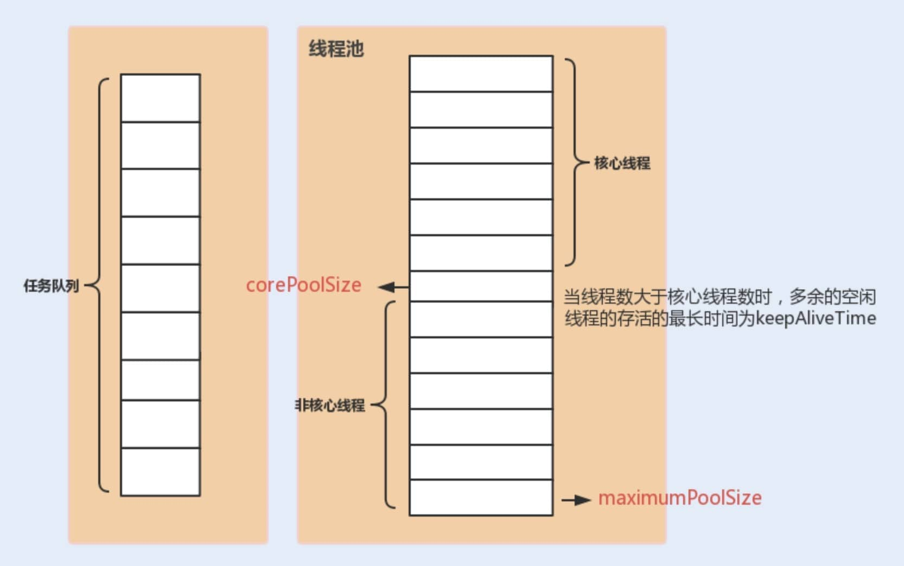
线程池的核心线程会被回收吗？
ThreadPoolExecutor 默认不会回收核心线程，即使它们已经空闲了。这是为了减少创建线程的开销，因为核心线程通常是要长期保持活跃的。但是，如果线程池是被用于周期性使用的场景，且频率不高（周期之间有明显的空闲时间），可以考虑将 allowCoreThreadTimeOut(boolean value) 方法的参数设置为 true，这样就会回收空闲（时间间隔由 keepAliveTime 指定）的核心线程了。
public void allowCoreThreadTimeOut(boolean value) {
// 核心线程的 keepAliveTime 必须大于 0 才能启用超时机制
if (value && keepAliveTime <= 0) {
throw new IllegalArgumentException("Core threads must have nonzero keep alive times");
}
// 设置 allowCoreThreadTimeOut 的值
if (value != allowCoreThreadTimeOut) {
allowCoreThreadTimeOut = value;
// 如果启用了超时机制，清理所有空闲的线程，包括核心线程
if (value) {
interruptIdleWorkers();
}
}
}
核心线程空闲时处于什么状态？
核心线程空闲时，其状态分为以下两种情况：
- 设置了核心线程的存活时间：核心线程在空闲时，会处于
WAITING状态，等待获取任务。如果阻塞等待的时间超过了核心线程存活时间，则该线程会退出工作，将该线程从线程池的工作线程集合中移除，线程状态变为TERMINATED状态。 - 没有设置核心线程的存活时间：核心线程在空闲时，会一直处于
WAITING状态，等待获取任务，核心线程会一直存活在线程池中。
当队列中有可用任务时，会唤醒被阻塞的线程，线程的状态会由 WAITING 状态变为 RUNNABLE 状态，之后去执行对应任务。
接下来通过相关源码，了解一下线程池内部是如何做的。
线程在线程池内部被抽象为了 Worker，当 Worker 被启动之后，会不断去任务队列中获取任务。
在获取任务的时候，会根据 timed 值来决定从任务队列（BlockingQueue）获取任务的行为。
如果「设置了核心线程的存活时间」或者「线程数量超过了核心线程数量」，则将 timed 标记为 true，表明获取任务时需要使用 poll() 指定超时时间。
timed == true：使用poll(timeout, unit)来获取任务。使用poll(timeout, unit)方法获取任务超时的话，则当前线程会退出执行（TERMINATED），该线程从线程池中被移除。timed == false：使用take()来获取任务。使用take()方法获取任务会让当前线程一直阻塞等待（WAITING）。
源码如下：
// ThreadPoolExecutor
private Runnable getTask() {
boolean timedOut = false;
for (;;) {
// ...
// 1、如果「设置了核心线程的存活时间」或者是「线程数量超过了核心线程数量」，则 timed 为 true。
boolean timed = allowCoreThreadTimeOut || wc > corePoolSize;
// 2、扣减线程数量。
// wc > maximuimPoolSize：线程池中的线程数量超过最大线程数量。其中 wc 为线程池中的线程数量。
// timed && timeOut：timeOut 表示获取任务超时。
// 分为两种情况：核心线程设置了存活时间 && 获取任务超时，则扣减线程数量；线程数量超过了核心线程数量 && 获取任务超时，则扣减线程数量。
if ((wc > maximumPoolSize || (timed && timedOut))
&& (wc > 1 || workQueue.isEmpty())) {
if (compareAndDecrementWorkerCount(c))
return null;
continue;
}
try {
// 3、如果 timed 为 true，则使用 poll() 获取任务；否则，使用 take() 获取任务。
Runnable r = timed ?
workQueue.poll(keepAliveTime, TimeUnit.NANOSECONDS) :
workQueue.take();
// 4、获取任务之后返回。
if (r != null)
return r;
timedOut = true;
} catch (InterruptedException retry) {
timedOut = false;
}
}
}
⭐️ 线程池的拒绝策略有哪些？
如果当前同时运行的线程数量达到最大线程数量并且队列也已经被放满了任务时，ThreadPoolExecutor 定义一些策略:
ThreadPoolExecutor.AbortPolicy：抛出RejectedExecutionException来拒绝新任务的处理。ThreadPoolExecutor.CallerRunsPolicy：调用执行者自己的线程运行任务，也就是直接在调用execute方法的线程中运行(run)被拒绝的任务，如果执行程序已关闭，则会丢弃该任务。因此这种策略会降低对于新任务提交速度，影响程序的整体性能。如果你的应用程序可以承受此延迟并且你要求任何一个任务请求都要被执行的话，你可以选择这个策略。ThreadPoolExecutor.DiscardPolicy：不处理新任务，直接丢弃掉。ThreadPoolExecutor.DiscardOldestPolicy：此策略将丢弃最早的未处理的任务请求。
举个例子：Spring 通过 ThreadPoolTaskExecutor 或者我们直接通过 ThreadPoolExecutor 的构造函数创建线程池的时候，当我们不指定 RejectedExecutionHandler 拒绝策略来配置线程池的时候，默认使用的是 AbortPolicy。在这种拒绝策略下，如果队列满了，ThreadPoolExecutor 将抛出 RejectedExecutionException 异常来拒绝新来的任务，这代表你将丢失对这个任务的处理。如果希望在线程池仍处于运行状态时避免直接丢弃任务，可以使用 CallerRunsPolicy，把任务回退给调用 execute() 的线程执行；如果线程池已经关闭，该策略仍会丢弃任务。
public static class CallerRunsPolicy implements RejectedExecutionHandler {
public CallerRunsPolicy() { }
public void rejectedExecution(Runnable r, ThreadPoolExecutor e) {
if (!e.isShutdown()) {
// 直接主线程执行，而不是线程池中的线程执行
r.run();
}
}
}
如果希望饱和时尽量不丢弃任务，应该选择哪个拒绝策略？
对于线程池仍在运行、并且调用线程可以接受同步执行任务的场景，可以考虑 CallerRunsPolicy。它不能提供“任何情况下都不丢任务”的保证：线程池关闭后任务会被丢弃，进程崩溃也无法靠内存中的拒绝策略恢复任务；需要强保证时应配合持久化或消息队列。
这里我们再来结合 CallerRunsPolicy 的源码来看看：
public static class CallerRunsPolicy implements RejectedExecutionHandler {
public CallerRunsPolicy() { }
public void rejectedExecution(Runnable r, ThreadPoolExecutor e) {
//只要当前程序没有关闭，就用执行execute方法的线程执行该任务
if (!e.isShutdown()) {
r.run();
}
}
}
从源码可以看出，只要当前程序不关闭就会使用执行 execute 方法的线程执行该任务。
CallerRunsPolicy 拒绝策略有什么风险？如何解决？
我们上面也提到了：如果希望在线程池饱和时通过调用线程施加反压、尽量避免直接丢弃任务，CallerRunsPolicy 是一种可选方案。
不过，如果走到 CallerRunsPolicy 的任务是个非常耗时的任务，且处理提交任务的线程是主线程，可能会导致主线程阻塞，影响程序的正常运行。
这里简单举一个例子，该线程池限定了最大线程数为 2，阻塞队列大小为 1（这意味着第 4 个任务就会走到拒绝策略），ThreadUtil 为 Hutool 提供的工具类：
public class ThreadPoolTest {
private static final Logger log = LoggerFactory.getLogger(ThreadPoolTest.class);
public static void main(String[] args) {
// 创建一个线程池，核心线程数为1，最大线程数为2
// 当线程数大于核心线程数时，多余的空闲线程存活的最长时间为60秒，
// 任务队列为容量为1的ArrayBlockingQueue，饱和策略为CallerRunsPolicy。
ThreadPoolExecutor threadPoolExecutor = new ThreadPoolExecutor(1,
2,
60,
TimeUnit.SECONDS,
new ArrayBlockingQueue<>(1),
new ThreadPoolExecutor.CallerRunsPolicy());
// 提交第一个任务，由核心线程执行
threadPoolExecutor.execute(() -> {
log.info("核心线程执行第一个任务");
ThreadUtil.sleep(1, TimeUnit.MINUTES);
});
// 提交第二个任务，由于核心线程被占用，任务将进入队列等待
threadPoolExecutor.execute(() -> {
log.info("非核心线程处理入队的第二个任务");
ThreadUtil.sleep(1, TimeUnit.MINUTES);
});
// 提交第三个任务，由于核心线程被占用且队列已满，创建非核心线程处理
threadPoolExecutor.execute(() -> {
log.info("非核心线程处理第三个任务");
ThreadUtil.sleep(1, TimeUnit.MINUTES);
});
// 提交第四个任务，由于核心线程和非核心线程都被占用，队列也满了，根据CallerRunsPolicy策略，任务将由提交任务的线程（即主线程）来执行
threadPoolExecutor.execute(() -> {
log.info("主线程处理第四个任务");
ThreadUtil.sleep(2, TimeUnit.MINUTES);
});
// 提交第五个任务，主线程被第四个任务卡住，该任务必须等到主线程执行完才能提交
threadPoolExecutor.execute(() -> {
log.info("核心线程执行第五个任务");
});
// 关闭线程池
threadPoolExecutor.shutdown();
}
}
输出：
18:19:48.203 INFO [pool-1-thread-1] c.j.concurrent.ThreadPoolTest - 核心线程执行第一个任务
18:19:48.203 INFO [pool-1-thread-2] c.j.concurrent.ThreadPoolTest - 非核心线程处理第三个任务
18:19:48.203 INFO [main] c.j.concurrent.ThreadPoolTest - 主线程处理第四个任务
18:20:48.212 INFO [pool-1-thread-2] c.j.concurrent.ThreadPoolTest - 非核心线程处理入队的第二个任务
18:21:48.219 INFO [pool-1-thread-2] c.j.concurrent.ThreadPoolTest - 核心线程执行第五个任务
从输出结果可以看出，因为 CallerRunsPolicy 这个拒绝策略，导致耗时的任务用了主线程执行，导致线程池阻塞，进而导致后续任务无法及时执行，严重的情况下很可能导致 OOM。
我们从问题的本质入手，调用者采用 CallerRunsPolicy 是希望所有的任务都能够被执行，暂时无法处理的任务又被保存在阻塞队列 BlockingQueue 中。这样的话，在内存允许的情况下，我们可以增加阻塞队列 BlockingQueue 的大小并调整堆内存以容纳更多的任务，确保任务能够被准确执行。
为了充分利用 CPU，我们还可以调整线程池的 maximumPoolSize（最大线程数）参数，这样可以提高任务处理速度，避免累计在 BlockingQueue 的任务过多导致内存用完。
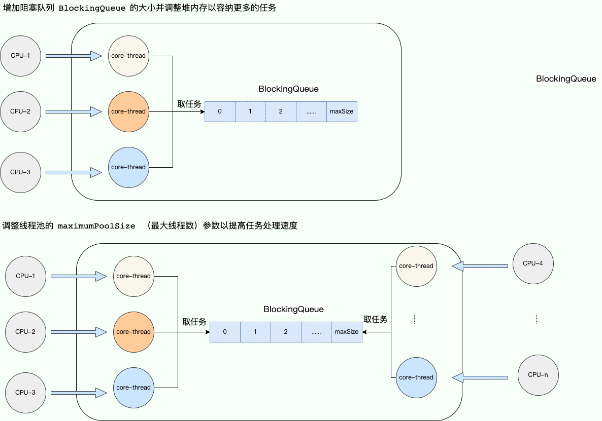
如果服务器资源已达到可利用的极限，这就意味我们要在设计策略上改变线程池的调度了，我们都知道，导致主线程卡死的本质就是因为我们不希望任何一个任务被丢弃。换个思路，有没有办法既能保证任务不被丢弃且在服务器有余力时及时处理呢？
这里提供的一种任务持久化的思路，这里所谓的任务持久化，包括但不限于:
- 设计一张任务表将任务存储到 MySQL 数据库中。
- Redis 缓存任务。
- 将任务提交到消息队列中。
这里以方案一为例，简单介绍一下实现逻辑：
- 实现
RejectedExecutionHandler接口自定义拒绝策略，自定义拒绝策略负责将线程池暂时无法处理（此时阻塞队列已满）的任务入库（保存到 MySQL 中）。注意：线程池暂时无法处理的任务会先被放在阻塞队列中，阻塞队列满了才会触发拒绝策略。 - 继承
BlockingQueue实现一个混合式阻塞队列，该队列包含 JDK 自带的ArrayBlockingQueue。另外，该混合式阻塞队列需要修改取任务处理的逻辑，也就是重写take()方法，取任务时优先从数据库中读取最早的任务，数据库中无任务时再从ArrayBlockingQueue中去取任务。
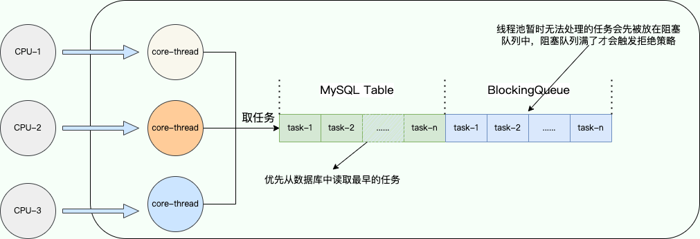
整个实现逻辑还是比较简单的，核心在于自定义拒绝策略和阻塞队列。如此一来，一旦我们的线程池中线程达到满载时，我们就可以通过拒绝策略将最新任务持久化到 MySQL 数据库中，等到线程池有了有余力处理所有任务时，让其优先处理数据库中的任务以避免“饥饿”问题。
当然，对于这个问题，我们也可以参考其他主流框架的做法，以 Netty 为例，它的拒绝策略则是直接创建一个线程池以外的线程处理这些任务，为了保证任务的实时处理，这种做法可能需要良好的硬件设备且临时创建的线程无法做到准确的监控：
private static final class NewThreadRunsPolicy implements RejectedExecutionHandler {
NewThreadRunsPolicy() {
super();
}
public void rejectedExecution(Runnable r, ThreadPoolExecutor executor) {
try {
//创建一个临时线程处理任务
final Thread t = new Thread(r, "Temporary task executor");
t.start();
} catch (Throwable e) {
throw new RejectedExecutionException(
"Failed to start a new thread", e);
}
}
}
ActiveMQ 则是尝试在指定的时效内尽可能的争取将任务入队，以保证最大交付：
new RejectedExecutionHandler() {
@Override
public void rejectedExecution(final Runnable r, final ThreadPoolExecutor executor) {
try {
//限时阻塞等待，实现尽可能交付
executor.getQueue().offer(r, 60, TimeUnit.SECONDS);
} catch (InterruptedException e) {
throw new RejectedExecutionException("Interrupted waiting for BrokerService.worker");
}
throw new RejectedExecutionException("Timed Out while attempting to enqueue Task.");
}
});
线程池常用的阻塞队列有哪些？
新任务来的时候会先判断当前运行的线程数量是否达到核心线程数，如果达到的话，新任务就会被存放在队列中。
不同的线程池会选用不同的阻塞队列，我们可以结合内置线程池来分析。
- 容量为
Integer.MAX_VALUE的LinkedBlockingQueue（无界阻塞队列）：FixedThreadPool和SingleThreadExecutor。FixedThreadPool最多只能创建核心线程数的线程（核心线程数和最大线程数相等），SingleThreadExecutor只能创建一个线程（核心线程数和最大线程数都是 1），二者的任务队列永远不会被放满。 SynchronousQueue（同步队列）：CachedThreadPool。SynchronousQueue没有容量，不存储元素，目的是保证对于提交的任务，如果有空闲线程，则使用空闲线程来处理；否则新建一个线程来处理任务。也就是说，CachedThreadPool的最大线程数是Integer.MAX_VALUE，可以理解为线程数是可以无限扩展的，可能会创建大量线程，从而导致 OOM。DelayedWorkQueue（延迟队列）：ScheduledThreadPool和SingleThreadScheduledExecutor。DelayedWorkQueue的内部元素并不是按照放入的时间排序，而是会按照延迟的时间长短对任务进行排序，内部采用的是“堆”的数据结构，可以保证每次出队的任务都是当前队列中执行时间最靠前的。DelayedWorkQueue是一个无界队列。其底层虽然是数组，但当数组容量不足时，它会自动进行扩容，因此队列永远不会被填满。当任务不断提交时，它们会全部被添加到队列中。这意味着线程池的线程数量永远不会超过其核心线程数，最大线程数参数对于使用该队列的线程池来说是无效的。ArrayBlockingQueue（有界阻塞队列）：底层由数组实现，容量一旦创建，就不能修改。
⭐️ 线程池处理任务的流程了解吗？
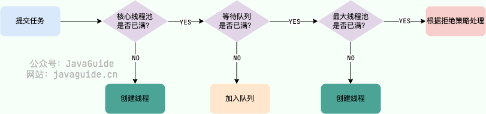
- 如果当前运行的线程数小于核心线程数，那么就会新建一个线程来执行任务。
- 如果当前运行的线程数等于或大于核心线程数，但是小于最大线程数，那么就把该任务放入到任务队列里等待执行。
- 如果向任务队列投放任务失败（任务队列已经满了），但是当前运行的线程数是小于最大线程数的，就新建一个线程来执行任务。
- 如果当前运行的线程数已经等同于最大线程数了，新建线程将会使当前运行的线程超出最大线程数，那么当前任务会被拒绝，拒绝策略会调用
RejectedExecutionHandler.rejectedExecution()方法。
再提一个有意思的小问题：线程池在提交任务前，可以提前创建线程吗？
答案是可以的！ThreadPoolExecutor 提供了两个方法帮助我们在提交任务之前，完成核心线程的创建，从而实现线程池预热的效果：
prestartCoreThread():启动一个线程，等待任务，如果已达到核心线程数，这个方法返回 false，否则返回 true；prestartAllCoreThreads():启动所有的核心线程，并返回启动成功的核心线程数。
⭐️ 线程池中线程异常后，销毁还是复用？
直接说结论，需要分两种情况：
- 使用
execute()提交任务：当任务通过execute()提交到线程池并在执行过程中抛出异常时，如果这个异常没有在任务内被捕获，那么该异常会导致当前线程终止，并且异常会被打印到控制台或日志文件中。线程池会检测到这种线程终止，并创建一个新线程来替换它，从而保持配置的线程数不变。 - 使用
submit()提交任务：对于通过submit()提交的任务，如果在任务执行中发生异常，这个异常不会直接打印出来。相反，异常会被封装在由submit()返回的Future对象中。当调用Future.get()方法时，可以捕获到一个ExecutionException。在这种情况下，线程不会因为异常而终止，它会继续存在于线程池中，准备执行后续的任务。
简单来说：使用 execute() 时，未捕获异常导致线程终止，线程池创建新线程替代；使用 submit() 时，异常被封装在 Future 中，线程继续复用。
这种设计允许 submit() 提供更灵活的错误处理机制，因为它允许调用者决定如何处理异常，而 execute() 则适用于那些不需要关注执行结果的场景。
具体的源码分析可以参考这篇：线程池中线程异常后：销毁还是复用？ - 京东技术。
⭐️ 如何给线程池命名？
初始化线程池的时候需要显示命名（设置线程池名称前缀），有利于定位问题。
默认情况下创建的线程名字类似 pool-1-thread-n 这样的，没有业务含义，不利于我们定位问题。
给线程池里的线程命名通常有下面两种方式：
1、利用 guava 的 ThreadFactoryBuilder
ThreadFactory threadFactory = new ThreadFactoryBuilder()
.setNameFormat(threadNamePrefix + "-%d")
.setDaemon(true).build();
ExecutorService threadPool = new ThreadPoolExecutor(corePoolSize, maximumPoolSize, keepAliveTime, TimeUnit.MINUTES, workQueue, threadFactory);
2、自己实现 ThreadFactory。
import java.util.concurrent.ThreadFactory;
import java.util.concurrent.atomic.AtomicInteger;
/**
* 线程工厂，它设置线程名称，有利于我们定位问题。
*/
public final class NamingThreadFactory implements ThreadFactory {
private final AtomicInteger threadNum = new AtomicInteger();
private final String name;
/**
* 创建一个带名字的线程池生产工厂
*/
public NamingThreadFactory(String name) {
this.name = name;
}
@Override
public Thread newThread(Runnable r) {
Thread t = new Thread(r);
t.setName(name + " [#" + threadNum.incrementAndGet() + "]");
return t;
}
}
如何设定线程池的大小？
很多人甚至可能都会觉得把线程池配置过大一点比较好！我觉得这明显是有问题的。就拿我们生活中非常常见的一例子来说：并不是人多就能把事情做好，增加了沟通交流成本。你本来一件事情只需要 3 个人做，你硬是拉来了 6 个人，会提升做事效率嘛？我想并不会。 线程数量过多的影响也是和我们分配多少人做事情一样，对于多线程这个场景来说主要是增加了上下文切换成本。不清楚什么是上下文切换的话，可以看我下面的介绍。
上下文切换：
多线程编程中一般线程的个数都大于 CPU 核心的个数，而一个 CPU 核心在任意时刻只能被一个线程使用，为了让这些线程都能得到有效执行，CPU 采取的策略是为每个线程分配时间片并轮转的形式。当一个线程的时间片用完的时候就会重新处于就绪状态让给其他线程使用，这个过程就属于一次上下文切换。概括来说就是：当前任务在执行完 CPU 时间片切换到另一个任务之前会先保存自己的状态，以便下次再切换回这个任务时，可以再加载这个任务的状态。任务从保存到再加载的过程就是一次上下文切换。
上下文切换通常是计算密集型的。也就是说，它需要相当可观的处理器时间，在每秒几十上百次的切换中，每次切换都需要纳秒量级的时间。所以，上下文切换对系统来说意味着消耗大量的 CPU 时间，事实上，可能是操作系统中时间消耗最大的操作。
Linux 相比与其他操作系统（包括其他类 Unix 系统）有很多的优点，其中有一项就是，其上下文切换和模式切换的时间消耗非常少。
类比于现实世界中的人类通过合作做某件事情，我们可以肯定的一点是线程池大小设置过大或者过小都会有问题，合适的才是最好。
- 如果我们设置的线程池数量太小的话，如果同一时间有大量任务/请求需要处理，可能会导致大量的请求/任务在任务队列中排队等待执行，甚至会出现任务队列满了之后任务/请求无法处理的情况，或者大量任务堆积在任务队列导致 OOM。这样很明显是有问题的，CPU 根本没有得到充分利用。
- 如果我们设置线程数量太大，大量线程可能会同时在争取 CPU 资源，这样会导致大量的上下文切换，从而增加线程的执行时间，影响了整体执行效率。
有一个简单并且适用面比较广的公式：
- CPU 密集型任务(N+1)： 这种任务消耗的主要是 CPU 资源，可以将线程数设置为 N（CPU 核心数）+1。比 CPU 核心数多出来的一个线程是为了防止线程偶发的缺页中断，或者其它原因导致的任务暂停而带来的影响。一旦任务暂停，CPU 就会处于空闲状态，而在这种情况下多出来的一个线程就可以充分利用 CPU 的空闲时间。
- I/O 密集型任务(2N)： 这种任务应用起来，系统会用大部分的时间来处理 I/O 交互，而线程在处理 I/O 的时间段内不会占用 CPU 来处理，这时就可以将 CPU 交出给其它线程使用。因此在 I/O 密集型任务的应用中，我们可以多配置一些线程，具体的计算方法是 2N。
如何判断是 CPU 密集任务还是 IO 密集任务？
CPU 密集型简单理解就是利用 CPU 计算能力的任务比如你在内存中对大量数据进行排序。但凡涉及到网络读取，文件读取这类都是 IO 密集型，这类任务的特点是 CPU 计算耗费时间相比于等待 IO 操作完成的时间来说很少，大部分时间都花在了等待 IO 操作完成上。
🌈 拓展一下（参见：issue#1737）：
线程数更严谨的计算的方法应该是：
最佳线程数 = N（CPU 核心数）∗（1+WT（线程等待时间）/ST（线程计算时间）），其中WT（线程等待时间）=线程运行总时间 - ST（线程计算时间）。线程等待时间所占比例越高，需要越多线程。线程计算时间所占比例越高，需要越少线程。
我们可以通过 JDK 自带的工具 VisualVM 来查看
WT/ST比例。CPU 密集型任务的
WT/ST接近或者等于 0，因此， 线程数可以设置为 N（CPU 核心数）∗（1+0）= N，和我们上面说的 N（CPU 核心数）+1 差不多。IO 密集型任务下，几乎全是线程等待时间，从理论上来说，你就可以将线程数设置为 2N（按道理来说，WT/ST 的结果应该比较大，这里选择 2N 的原因应该是为了避免创建过多线程吧）。
公式也只是参考，具体还是要根据项目实际线上运行情况来动态调整。我在后面介绍的美团的线程池参数动态配置这种方案就非常不错，很实用！
⭐️ 如何动态修改线程池的参数？
美团技术团队在《Java 线程池实现原理及其在美团业务中的实践》这篇文章中介绍到对线程池参数实现可自定义配置的思路和方法。
美团技术团队的思路是主要对线程池的核心参数实现自定义可配置。这三个核心参数是：
corePoolSize： 默认情况下，即使空闲也会保留在线程池中的线程数量；工作线程少于该值时，新任务会优先触发创建线程。maximumPoolSize： 线程池允许存在的最大工作线程数。workQueue： 工作线程数达到corePoolSize后，新任务会先尝试进入队列；入队失败时才会在不超过maximumPoolSize的前提下继续创建线程。
为什么是这三个参数？
我在Java 线程池详解 这篇文章中就说过这三个参数是 ThreadPoolExecutor 最重要的参数，它们基本决定了线程池对于任务的处理策略。
如何支持参数动态配置？ 且看 ThreadPoolExecutor 提供的下面这些方法。
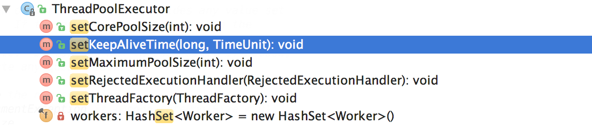
格外需要注意的是 corePoolSize。运行期间调小该参数后，超过新核心线程数的现有线程会在下一次空闲时终止；调大时，如果队列中已有任务，线程池会按需启动新线程处理。
另外，你也看到了上面并没有动态指定队列长度的方法，美团的方式是自定义了一个叫做 ResizableCapacityLinkedBlockingQueue 的队列（主要就是把 LinkedBlockingQueue 的 capacity 字段的 final 关键字修饰给去掉了，让它变为可变的）。
最终实现的可动态修改线程池参数效果如下。👏👏👏
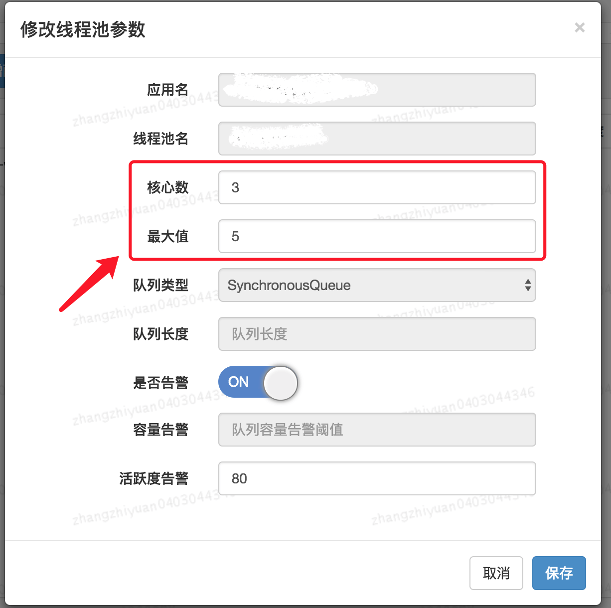
还没看够？我在《后端面试高频系统设计&场景题》中详细介绍了如何设计一个动态线程池，这也是面试中常问的一道系统设计题。
如果我们的项目也想要实现这种效果的话，可以借助现成的开源项目：
- Hippo4j：异步线程池框架，支持线程池动态变更&监控&报警，无需修改代码轻松引入。支持多种使用模式，轻松引入，致力于提高系统运行保障能力。
- Dynamic TP：轻量级动态线程池，内置监控告警功能，集成三方中间件线程池管理，基于主流配置中心（已支持 Nacos、Apollo，Zookeeper、Consul、Etcd，可通过 SPI 自定义实现）。
⭐️ 如何设计一个能够根据任务的优先级来执行的线程池？
这是一个常见的面试问题，本质其实还是在考察求职者对于线程池以及阻塞队列的掌握。
我们上面也提到了，不同的线程池会选用不同的阻塞队列作为任务队列。FixedThreadPool 使用默认容量为 Integer.MAX_VALUE 的 LinkedBlockingQueue，通常将其视为无界队列；实际应用几乎无法填满，因此 FixedThreadPool 通常只会创建 corePoolSize 个工作线程。
假如我们需要实现一个优先级任务线程池的话，那可以考虑使用 PriorityBlockingQueue（优先级阻塞队列）作为任务队列（ThreadPoolExecutor 的构造函数有一个 workQueue 参数可以传入任务队列）。
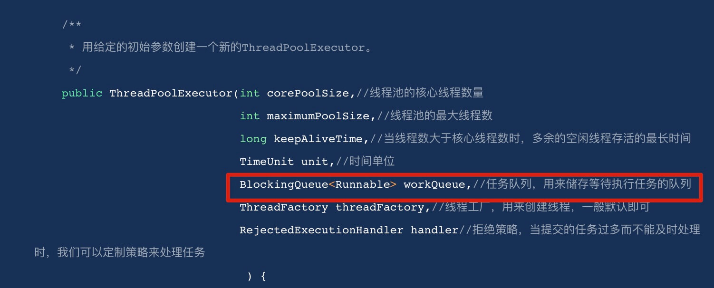
PriorityBlockingQueue 是一个支持优先级的无界阻塞队列，可以看作是线程安全的 PriorityQueue，两者底层都是使用小顶堆形式的二叉堆，即值最小的元素优先出队。不过，PriorityQueue 不支持阻塞操作。
要想让 PriorityBlockingQueue 实现对任务的排序，传入其中的任务必须是具备排序能力的，方式有两种：
- 提交到线程池的任务实现
Comparable接口，并重写compareTo方法来指定任务之间的优先级比较规则。 - 创建
PriorityBlockingQueue时传入一个Comparator对象来指定任务之间的排序规则（推荐）。
不过，这存在一些风险和问题，比如：
PriorityBlockingQueue是无界的，可能堆积大量的请求，从而导致 OOM。- 可能会导致饥饿问题，即低优先级的任务长时间得不到执行。
- 由于需要对队列中的元素进行排序操作以及保证线程安全（并发控制采用的是可重入锁
ReentrantLock），因此会降低性能。
对于 OOM 这个问题的解决比较简单粗暴，就是继承 PriorityBlockingQueue 并重写一下 offer 方法（入队）的逻辑，当插入的元素数量超过指定值就返回 false。
饥饿问题这个可以通过优化设计来解决（比较麻烦），比如等待时间过长的任务会被移除并重新添加到队列中，但是优先级会被提升。
对于性能方面的影响，是没办法避免的，毕竟需要对任务进行排序操作。并且，对于大部分业务场景来说，这点性能影响是可以接受的。
【Future】
Future 接口有什么用？
Future 接口是异步思想的典型运用，主要用在一些需要执行耗时任务的场景，避免程序一直原地等待耗时任务执行完成，执行效率太低。具体来说是这样的：当我们执行某一耗时的任务时，可以将这个耗时任务交给一个子线程去异步执行，同时我们可以干点其他事情，不用傻傻等待耗时任务执行完成。等我们的事情干完后，我们再通过 Future 获取到耗时任务的执行结果。这样一来，程序的执行效率就明显提高了。
这其实就是多线程中经典的 Future 模式，你可以将其看作是一种设计模式，核心思想是异步调用，主要用在多线程领域，并非 Java 语言独有。
在 Java 中，Future 是一个泛型接口，位于 java.util.concurrent 包下。它有 5 个经典抽象方法，主要包括下面 4 类功能；JDK 19 起又增加了 resultNow()、exceptionNow() 和 state() 三个默认查询方法。
- 取消任务；
- 判断任务是否被取消;
- 判断任务是否已经执行完成;
- 获取任务执行结果。
// V 代表了Future执行的任务返回值的类型
public interface Future {
// 取消任务执行
// 成功取消返回 true，否则返回 false
boolean cancel(boolean mayInterruptIfRunning);
// 判断任务是否被取消
boolean isCancelled();
// 判断任务是否已经执行完成
boolean isDone();
// 获取任务执行结果
V get() throws InterruptedException, ExecutionException;
// 指定时间内没有返回计算结果就抛出 TimeOutException 异常
V get(long timeout, TimeUnit unit)
throws InterruptedException, ExecutionException, TimeoutExceptio
}
简单理解就是：我有一个任务，提交给了 Future 来处理。任务执行期间我自己可以去做任何想做的事情。并且，在这期间我还可以取消任务以及获取任务的执行状态。一段时间之后，我就可以 Future 那里直接取出任务执行结果。
Callable 和 Future 有什么关系？
我们可以通过 FutureTask 来理解 Callable 和 Future 之间的关系。
FutureTask 提供了 Future 接口的基本实现，常用来封装 Callable 和 Runnable，具有取消任务、查看任务是否执行完成以及获取任务执行结果的方法。ExecutorService.submit() 方法返回的其实就是 Future 的实现类 FutureTask。
Future submit(Callable task);
Future<?> submit(Runnable task);
FutureTask 不光实现了 Future 接口，还实现了 Runnable 接口，因此可以作为任务直接被线程执行。
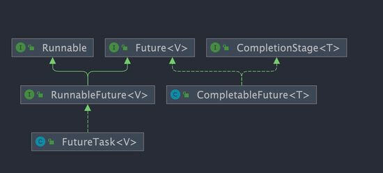
FutureTask 有两个构造函数，可传入 Callable 或者 Runnable 对象。实际上，传入 Runnable 对象也会在方法内部转换为 Callable 对象。
public FutureTask(Callable callable) {
if (callable == null)
throw new NullPointerException();
this.callable = callable;
this.state = NEW;
}
public FutureTask(Runnable runnable, V result) {
// 通过适配器RunnableAdapter来将Runnable对象runnable转换成Callable对象
this.callable = Executors.callable(runnable, result);
this.state = NEW;
}
FutureTask 相当于对 Callable 进行了封装，管理着任务执行的情况，存储了 Callable 的 call 方法的任务执行结果。
关于更多 Future 的源码细节，可以肝这篇万字解析，写的很清楚：Java 是如何实现 Future 模式的？万字详解！。
CompletableFuture 类有什么用？
Future 在实际使用过程中存在一些局限性，比如不支持异步任务的编排组合、获取计算结果的 get() 方法为阻塞调用。
Java 8 才被引入 CompletableFuture 类可以解决 Future 的这些缺陷。CompletableFuture 除了提供了更为好用和强大的 Future 特性之外，还提供了函数式编程、异步任务编排组合（可以将多个异步任务串联起来，组成一个完整的链式调用）等能力。
下面我们来简单看看 CompletableFuture 类的定义。
public class CompletableFuture implements Future, CompletionStage {
}
可以看到，CompletableFuture 同时实现了 Future 和 CompletionStage 接口。
CompletionStage 接口描述了一个异步计算的阶段。很多计算可以分成多个阶段或步骤，此时可以通过它将所有步骤组合起来，形成异步计算的流水线。
CompletionStage 接口中的方法比较多，CompletableFuture 的函数式能力就是这个接口赋予的。从这个接口的方法参数你就可以发现其大量使用了 Java8 引入的函数式编程。
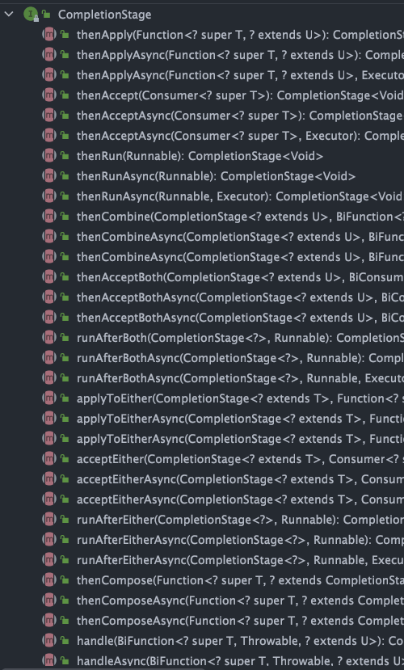
⭐️ 一个任务需要依赖另外两个任务执行完之后再执行，怎么设计？
这种任务编排场景非常适合通过 CompletableFuture 实现。这里假设要实现 T3 在 T2 和 T1 执行完后执行。
代码如下（这里为了简化代码，用到了 Hutool 的线程工具类 ThreadUtil 和日期时间工具类 DateUtil）：
// T1
CompletableFuture futureT1 = CompletableFuture.runAsync(() -> {
System.out.println("T1 is executing. Current time：" + DateUtil.now());
// 模拟耗时操作
ThreadUtil.sleep(1000);
});
// T2
CompletableFuture futureT2 = CompletableFuture.runAsync(() -> {
System.out.println("T2 is executing. Current time：" + DateUtil.now());
ThreadUtil.sleep(1000);
});
// 使用allOf()方法合并T1和T2的CompletableFuture，等待它们都完成
CompletableFuture bothCompleted = CompletableFuture.allOf(futureT1, futureT2);
// 当T1和T2都完成后，执行T3
bothCompleted.thenRunAsync(() -> System.out.println("T3 is executing after T1 and T2 have completed.Current time：" + DateUtil.now()));
// 等待所有任务完成，验证效果
ThreadUtil.sleep(3000);
T1 和 T2 在前面通过 runAsync() 启动，allOf() 只组合它们的完成状态：当二者都完成后，再执行 T3。是否并行取决于任务的创建方式和执行器，而不是 allOf() 本身。
⭐️ 使用 CompletableFuture，有一个任务失败，如何处理异常？
使用 CompletableFuture 的时候一定要以正确的方式进行异常处理，避免异常丢失或者出现不可控问题。
下面是一些建议：
whenComplete会在阶段正常或异常完成时执行回调，适合观察结果和记录异常；它默认保留原阶段的结果或异常。exceptionally只在阶段异常完成时执行，并用回调的返回值恢复为正常结果；如果需要继续传播异常，可以在回调中显式抛出异常。handle无论阶段正常还是异常完成都会执行，并根据结果和异常生成一个新的结果。CompletableFuture.allOf可以等待多个阶段全部完成；只要其中一个阶段异常完成，返回的CompletableFuture也会异常完成，但仍需分别检查各阶段才能获得每个任务的结果或异常。- ……
⭐️ 在使用 CompletableFuture 的时候为什么要自定义线程池？
在 CompletableFuture 的默认实现中，没有显式传入 Executor 的异步方法通常使用全局共享的 ForkJoinPool.commonPool()；子类可以通过重写 defaultExecutor() 改变非静态异步方法的默认执行器。这意味着使用默认实现的应用程序和库通常会共享同一个线程池。
虽然 ForkJoinPool 效率很高，但当同时提交大量任务时，可能会导致资源竞争和线程饥饿，进而影响系统性能。
为避免这些问题，建议为 CompletableFuture 提供自定义线程池，带来以下优势：
- 隔离性：为不同任务分配独立的线程池，避免全局线程池资源争夺。
- 资源控制：根据任务特性调整线程池大小和队列类型，优化性能表现。
- 异常处理：通过自定义
ThreadFactory更好地处理线程中的异常情况。
private ThreadPoolExecutor executor = new ThreadPoolExecutor(10, 10,
0L, TimeUnit.MILLISECONDS,
new LinkedBlockingQueue());
CompletableFuture.runAsync(() -> {
//...
}, executor);
【AQS】
AQS 是什么？
AQS（AbstractQueuedSynchronizer，抽象队列同步器）是从 JDK1.5 开始提供的 Java 并发核心组件。
AQS 解决了开发者在实现同步器时的复杂性问题。它提供了一个通用框架，用于实现各种同步器，例如 可重入锁（ReentrantLock）、信号量（Semaphore）和 倒计时器（CountDownLatch）。通过封装底层的线程同步机制，AQS 将复杂的线程管理逻辑隐藏起来，使开发者只需专注于具体的同步逻辑。
简单来说，AQS 是一个抽象类，为同步器提供了通用的 执行框架。它定义了 资源获取和释放的通用流程，而具体的资源获取逻辑则由具体同步器通过重写模板方法来实现。 因此，可以将 AQS 看作是同步器的 基础“底座”，而同步器则是基于 AQS 实现的 具体“应用”。
⭐️ AQS 的原理是什么？
说明：下面展示的
waitStatus、Unsafe.compareAndSwapInt()等内部结构和源码片段基于 JDK 8。AQS 的内部实现后来持续演进：JDK 11 中仍保留了本文涉及的主要结构，JDK 17 及当前版本的节点字段和入队、等待实现则已有较大变化，但同步状态、等待队列和模板方法这些核心思想仍然适用。
AQS 核心思想是，如果被请求的共享资源空闲，则将当前请求资源的线程设置为有效的工作线程，并且将共享资源设置为锁定状态。如果被请求的共享资源被占用，那么就需要一套线程阻塞等待以及被唤醒时锁分配的机制，这个机制 AQS 是基于 CLH 锁（Craig, Landin, and Hagersten locks） 进一步优化实现的。
CLH 锁 对自旋锁进行了改进，是基于单链表的自旋锁。在多线程场景下，会将请求获取锁的线程组织成一个单向队列，每个等待的线程会通过自旋访问前一个线程节点的状态，前一个节点释放锁之后，当前节点才可以获取锁。CLH 锁 的队列结构如下图所示。
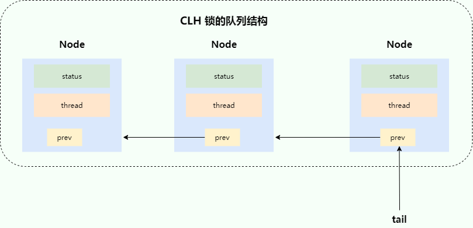
AQS 中使用的 等待队列 是 CLH 锁队列的变体（接下来简称为 CLH 变体队列）。
AQS 的 CLH 变体队列是一个双向队列，会暂时获取不到锁的线程将被加入到该队列中，CLH 变体队列和原本的 CLH 锁队列的区别主要有两点：
- 由 自旋 优化为 自旋 + 阻塞：自旋操作的性能很高，但大量的自旋操作比较占用 CPU 资源，因此在 CLH 变体队列中会先通过自旋尝试获取锁，如果失败再进行阻塞等待。
- 由 单向队列 优化为 双向队列：在 CLH 变体队列中，会对等待的线程进行阻塞操作，当队列前边的线程释放锁之后，需要对后边的线程进行唤醒，因此增加了
next指针，成为了双向队列。
AQS 将每条请求共享资源的线程封装成一个 CLH 变体队列的一个结点（Node）来实现锁的分配。在 CLH 变体队列中，一个节点表示一个线程，它保存着线程的引用（thread）、 当前节点在队列中的状态（waitStatus）、前驱节点（prev）、后继节点（next）。
AQS 中的 CLH 变体队列结构如下图所示：
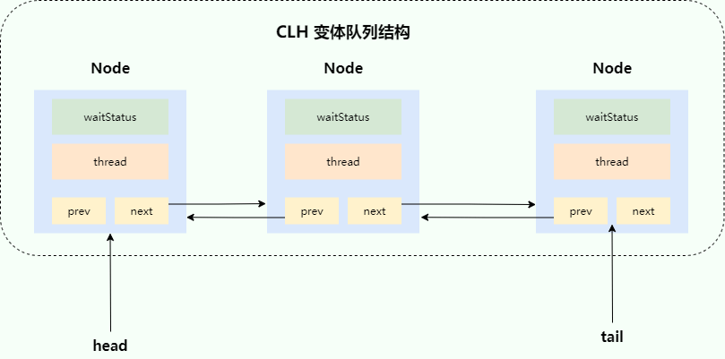
AQS(AbstractQueuedSynchronizer)的核心原理图：
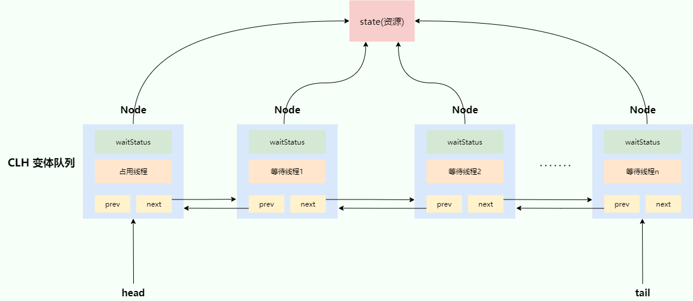
AQS 使用 int 成员变量 state 表示同步状态，通过内置的 线程等待队列 来完成获取资源线程的排队工作。
state 变量由 volatile 修饰，用于展示当前临界资源的获锁情况。
// 共享变量，使用volatile修饰保证线程可见性
private volatile int state;
另外，状态信息 state 可以通过 protected 类型的 getState()、setState() 和 compareAndSetState() 进行操作。并且，这几个方法都是 final 修饰的，在子类中无法被重写。
//返回同步状态的当前值
protected final int getState() {
return state;
}
// 设置同步状态的值
protected final void setState(int newState) {
state = newState;
}
//原子地（CAS操作）将同步状态值设置为给定值update如果当前同步状态的值等于expect（期望值）
protected final boolean compareAndSetState(int expect, int update) {
return unsafe.compareAndSwapInt(this, stateOffset, expect, update);
}
以 ReentrantLock 为例，state 初始值为 0，表示未锁定状态。A 线程 lock() 时，会调用 tryAcquire() 独占该锁并将 state+1。此后，其他线程再 tryAcquire() 时就会失败，直到 A 线程 unlock() 到 state=0（即释放锁）为止，其它线程才有机会获取该锁。当然，释放锁之前，A 线程自己是可以重复获取此锁的（state 会累加），这就是可重入的概念。但要注意，获取多少次就要释放多少次，这样才能保证 state 是能回到零态的。
再以 CountDownLatch 为例，state 初始化为 N，表示需要等待 N 次 countDown() 调用。N 表示事件数或计数次数，不要求与线程数一致；同一个线程可以调用多次，也可以由多个线程分别调用。当 state 变为 0 时，等待队列中因调用 await() 而阻塞的线程会被唤醒并继续执行。
Semaphore 有什么用？
synchronized 和 ReentrantLock 都是一次只允许一个线程访问某个资源，而 Semaphore（信号量）可以用来控制同时访问特定资源的线程数量。
Semaphore 的使用简单，我们这里假设有 N(N>5) 个线程来获取 Semaphore 中的共享资源，下面的代码表示同一时刻 N 个线程中只有 5 个线程能获取到共享资源，其他线程都会阻塞，只有获取到共享资源的线程才能执行。等到有线程释放了共享资源，其他阻塞的线程才能获取到。
// 初始共享资源数量
final Semaphore semaphore = new Semaphore(5);
// 获取1个许可
semaphore.acquire();
// 释放1个许可
semaphore.release();
当许可证数量为 1 时，Semaphore 可以把并发访问数限制为 1，但它不同于互斥锁：信号量没有所有权约束，获取许可证的线程和释放许可证的线程可以不是同一个线程。
Semaphore 有两种模式：。
- 公平模式： 存在竞争时，阻塞式
acquire方法会在内部排队点按 FIFO 选择线程；无参的tryAcquire()不遵守公平设置，仍可能插队成功； - 非公平模式： 抢占式的。
Semaphore 对应的两个构造方法如下：
public Semaphore(int permits) {
sync = new NonfairSync(permits);
}
public Semaphore(int permits, boolean fair) {
sync = fair ? new FairSync(permits) : new NonfairSync(permits);
}
这两个构造方法，都必须提供许可的数量，第二个构造方法可以指定是公平模式还是非公平模式，默认非公平模式。
Semaphore 通常用于那些资源有明确访问数量限制的场景比如限流（仅限于单机模式，实际项目中推荐使用 Redis +Lua 来做限流）。
Semaphore 的原理是什么？
Semaphore 是共享锁的一种实现，它默认构造 AQS 的 state 值为 permits，你可以将 permits 的值理解为许可证的数量，只有拿到许可证的线程才能执行。
调用 semaphore.acquire()，线程尝试获取许可证，如果 state >= 0 的话，则表示可以获取成功。如果获取成功的话，使用 CAS 操作去修改 state 的值 state=state-1。如果 state<0 的话，则表示许可证数量不足。此时会创建一个 Node 节点加入阻塞队列，挂起当前线程。
/**
* 获取1个许可证
*/
public void acquire() throws InterruptedException {
sync.acquireSharedInterruptibly(1);
}
/**
* 共享模式下获取许可证，获取成功则返回，失败则加入阻塞队列，挂起线程
*/
public final void acquireSharedInterruptibly(int arg)
throws InterruptedException {
if (Thread.interrupted())
throw new InterruptedException();
// 尝试获取许可证，arg为获取许可证个数，当可用许可证数减当前获取的许可证数结果小于0,则创建一个节点加入阻塞队列，挂起当前线程。
if (tryAcquireShared(arg) < 0)
doAcquireSharedInterruptibly(arg);
}
调用 semaphore.release();，线程尝试释放许可证，并使用 CAS 操作去修改 state 的值 state=state+1。释放许可证成功之后，同时会唤醒同步队列中的一个线程。被唤醒的线程会重新尝试去修改 state 的值 state=state-1，如果 state>=0 则获取令牌成功，否则重新进入阻塞队列，挂起线程。
// 释放一个许可证
public void release() {
sync.releaseShared(1);
}
// 释放共享锁，同时会唤醒同步队列中的一个线程。
public final boolean releaseShared(int arg) {
//释放共享锁
if (tryReleaseShared(arg)) {
//唤醒同步队列中的一个线程
doReleaseShared();
return true;
}
return false;
}
CountDownLatch 有什么用？
CountDownLatch 允许任意数量的线程在 await() 处等待，直至发生 count 次 countDown() 调用。这个计数表示事件或操作次数，不一定对应 count 个不同线程。
CountDownLatch 是一次性的，计数器的值只能在构造方法中初始化一次，之后没有任何机制再次对其设置值，当 CountDownLatch 使用完毕后，它不能再次被使用。
CountDownLatch 的原理是什么？
CountDownLatch 是共享模式同步器的一种实现，它构造时将 AQS 的 state 设置为 count。每次调用 countDown() 都会通过 tryReleaseShared 将 state 减 1，直至为 0。调用 await() 时，如果 state 不为 0，当前线程就会等待：计数归零时，无参 await() 正常返回，带超时版本返回 true；等待期间被中断时会抛出 InterruptedException；带超时版本到期时返回 false。调用 countDown() 的次数与线程数量没有必然关系。
用过 CountDownLatch 么？什么场景下用的？
CountDownLatch 的作用就是允许任意数量的线程在一个地方等待，直至发生 count 次 countDown() 调用。之前在项目中，有一个使用多线程读取多个文件处理的场景，我用到了 CountDownLatch。具体场景是下面这样的：
我们要读取处理 6 个文件，这 6 个任务都是没有执行顺序依赖的任务，但是我们需要返回给用户的时候将这几个文件的处理的结果进行统计整理。
为此我们定义了一个线程池和 count 为 6 的 CountDownLatch 对象。使用线程池处理读取任务，每一个线程处理完之后就将 count-1，调用 CountDownLatch 对象的 countDown() 方法，直到所有文件读取完之后，才会接着执行后面的逻辑。
伪代码是下面这样的：
public class CountDownLatchExample1 {
// 处理文件的数量
private static final int threadCount = 6;
public static void main(String[] args) throws InterruptedException {
// 创建一个具有固定线程数量的线程池对象（推荐使用构造方法创建）
ExecutorService threadPool = Executors.newFixedThreadPool(10);
final CountDownLatch countDownLatch = new CountDownLatch(threadCount);
for (int i = 0; i < threadCount; i++) {
final int threadnum = i;
threadPool.execute(() -> {
try {
//处理文件的业务操作
//......
} catch (InterruptedException e) {
e.printStackTrace();
} finally {
//表示一个文件已经被完成
countDownLatch.countDown();
}
});
}
countDownLatch.await();
threadPool.shutdown();
System.out.println("finish");
}
}
有没有可以改进的地方呢？
可以使用 CompletableFuture 类来改进！Java8 的 CompletableFuture 提供了很多对多线程友好的方法，使用它可以很方便地为我们编写多线程程序，什么异步、串行、并行或者等待所有线程执行完任务什么的都非常方便。
CompletableFuture task1 =
CompletableFuture.supplyAsync(()->{
//自定义业务操作
});
......
CompletableFuture task6 =
CompletableFuture.supplyAsync(()->{
//自定义业务操作
});
......
CompletableFuture headerFuture=CompletableFuture.allOf(task1,.....,task6);
try {
headerFuture.join();
} catch (Exception ex) {
//......
}
System.out.println("all done. ");
上面的代码还可以继续优化，当任务过多的时候，把每一个 task 都列出来不太现实，可以考虑通过循环来添加任务。
//文件夹位置
List filePaths = Arrays.asList(...)
// 异步处理所有文件
List> fileFutures = filePaths.stream()
.map(filePath -> doSomeThing(filePath))
.collect(Collectors.toList());
// 将他们合并起来
CompletableFuture allFutures = CompletableFuture.allOf(
fileFutures.toArray(new CompletableFuture[fileFutures.size()])
);
CyclicBarrier 有什么用？
CyclicBarrier 和 CountDownLatch 非常类似，它也可以实现线程间的技术等待，但是它的功能比 CountDownLatch 更加复杂和强大。主要应用场景和 CountDownLatch 类似。
CountDownLatch的实现是基于 AQS 的，而CyclicBarrier是基于ReentrantLock(ReentrantLock也属于 AQS 同步器)和Condition的。
CyclicBarrier 的字面意思是可循环使用（Cyclic）的屏障（Barrier）。它要做的事情是：让一组线程到达一个屏障（也可以叫同步点）时被阻塞，直到最后一个线程到达屏障时，屏障才会开门，所有被屏障拦截的线程才会继续干活。
CyclicBarrier 的原理是什么？
CyclicBarrier 内部通过一个 count 变量作为计数器，count 的初始值为 parties 属性的初始化值，每当一个线程到了栅栏这里了，那么就将计数器减 1。如果 count 值为 0 了，表示这是这一代最后一个线程到达栅栏，就尝试执行我们构造方法中输入的任务。
//每次拦截的线程数
private final int parties;
//计数器
private int count;
下面我们结合源码来简单看看。
1、CyclicBarrier 默认的构造方法是 CyclicBarrier(int parties)，其参数表示屏障拦截的线程数量，每个线程调用 await() 方法告诉 CyclicBarrier 我已经到达了屏障，然后当前线程被阻塞。
public CyclicBarrier(int parties) {
this(parties, null);
}
public CyclicBarrier(int parties, Runnable barrierAction) {
if (parties <= 0) throw new IllegalArgumentException();
this.parties = parties;
this.count = parties;
this.barrierCommand = barrierAction;
}
其中，parties 就代表了有拦截的线程的数量，当拦截的线程数量达到这个值的时候就打开栅栏，让所有线程通过。
2、当调用 CyclicBarrier 对象调用 await() 方法时，实际上调用的是 dowait(false, 0L) 方法。 await() 方法就像树立起一个栅栏的行为一样，将线程挡住了，当拦住的线程数量达到 parties 的值时，栅栏才会打开，线程才得以通过执行。
public int await() throws InterruptedException, BrokenBarrierException {
try {
return dowait(false, 0L);
} catch (TimeoutException toe) {
throw new Error(toe); // cannot happen
}
}
dowait(false, 0L) 方法源码分析如下：
// 当线程数量或者请求数量达到 count 时 await 之后的方法才会被执行。上面的示例中 count 的值就为 5。
private int count;
/**
* Main barrier code, covering the various policies.
*/
private int dowait(boolean timed, long nanos)
throws InterruptedException, BrokenBarrierException,
TimeoutException {
final ReentrantLock lock = this.lock;
// 锁住
lock.lock();
try {
final Generation g = generation;
if (g.broken)
throw new BrokenBarrierException();
// 如果线程中断了，抛出异常
if (Thread.interrupted()) {
breakBarrier();
throw new InterruptedException();
}
// cout减1
int index = --count;
// 当 count 数量减为 0 之后说明最后一个线程已经到达栅栏了，也就是达到了可以执行await 方法之后的条件
if (index == 0) { // tripped
boolean ranAction = false;
try {
final Runnable command = barrierCommand;
if (command != null)
command.run();
ranAction = true;
// 将 count 重置为 parties 属性的初始化值
// 唤醒之前等待的线程
// 下一波执行开始
nextGeneration();
return 0;
} finally {
if (!ranAction)
breakBarrier();
}
}
// loop until tripped, broken, interrupted, or timed out
for (;;) {
try {
if (!timed)
trip.await();
else if (nanos > 0L)
nanos = trip.awaitNanos(nanos);
} catch (InterruptedException ie) {
if (g == generation && ! g.broken) {
breakBarrier();
throw ie;
} else {
// We're about to finish waiting even if we had not
// been interrupted, so this interrupt is deemed to
// "belong" to subsequent execution.
Thread.currentThread().interrupt();
}
}
if (g.broken)
throw new BrokenBarrierException();
if (g != generation)
return index;
if (timed && nanos <= 0L) {
breakBarrier();
throw new TimeoutException();
}
}
} finally {
lock.unlock();
}
}
【虚拟线程】
虚拟线程
虚拟线程在 Java 21 正式发布，这是一项重量级的更新。虽然目前面试中问的不多，但还是建议大家去简单了解一下。我写了一篇文章来总结虚拟线程常见的问题：虚拟线程常见问题总结，包含下面这些问题：
- 什么是虚拟线程？
- 虚拟线程和平台线程有什么关系？
- 虚拟线程有什么优点和缺点？
- 如何创建虚拟线程？
- 虚拟线程的底层原理是什么？
参考
- 《深入理解 Java 虚拟机》
- 《实战 Java 高并发程序设计》
- Java 线程池的实现原理及其在业务中的最佳实践：阿里云开发者：
- 带你了解下 SynchronousQueue（并发队列专题）：
- 阻塞队列 — DelayedWorkQueue 源码分析：
- Java 多线程（三）——FutureTask/CompletableFuture：
- Java 并发之 AQS 详解：
- Java 并发包基石-AQS 详解：